本体 篇 Wii U GamePad 篇 Miiverse プロデュース 篇 Miiverse 開発スタッフ 篇 インターネットブラウザー 篇 Wii U Chat 篇 New スーパーマリオブラザーズ U 篇 ZombiU（ゾンビU） 篇 Nintendo×JOYSOUND Wii カラオケ U 篇 Nintendo Land 篇 Nintendo TVii 篇 Wii Street U powered by Google 篇 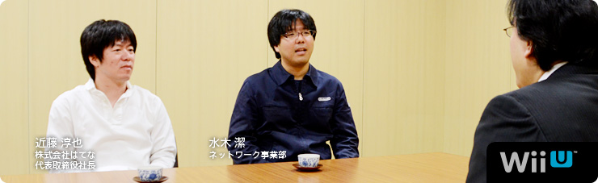 本文の一部を引用される場合は、必ず、本ページのURLを明記、または本ページへのリンクをしていただくようお願いいたします。 1. “共感ネットワーク” 2. ２階建てのサービス構造 3. ネットワーク方針の大転換 4. 「Wiiが街に」 岩田 多分、冒頭に載っている写真をご覧になった方が、 「なぜ、はてな（※1）の近藤さんがここに？」 と思われるかもしれません。 ※1 はてな＝株式会社はてな。「はてなブックマーク」「はてなダイアリー（はてなブログ）」をはじめとする、「はてな」の各サービスを開発し、インターネット上で運営を行う。設立は２００１年。本社は京都市。 近藤 ああ、そうですよね（笑）。 岩田 『Miiverse』をつくることになったときから、 ずっとごいっしょさせていただいています。 今回は「『Miiverse』プロデュース篇」ということで、 よろしくお願いします。 一同 よろしくお願いします。 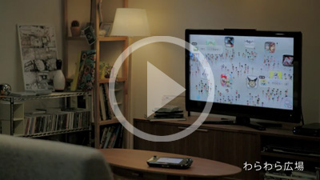 『Miiverse』紹介映像を見る 岩田 『Miiverse』というのは、 Miiを通じて世界中の人たちがつながる、 Wii Uにシステムレベルで統合された ゲームをもっと楽しむためのネットワークサービスです。 好きなゲームソフトの広場で感想を述べあったり、 手描きの絵や、コメントを書き込んだりしながら、 お客さん同士で交流を楽しむことができるサービスです。 また、「お互いのＩＤを打ち込む」という これまでのフレンドコード（※2）を打ち込むのと 同じような方法に加えて、『Miiverse』を使うことで、 いままでより簡単にフレンド関係を 成立させることもできるようになります。 ではまず、近藤さんから自己紹介をお願いします。 ※2 フレンドコード＝WiiやニンテンドーDS、ニンテンドー3DSなどで、インターネットに接続するときに、割り振られるIDのこと。お互いにフレンドコードを登録すると、離れた場所にいる友達とインターネットを通じて通信プレイが楽しめる。 近藤 株式会社はてなの近藤です。 『Miiverse』では、 初期のコンセプトメイキングなどを担当しました。 よろしくお願いします。 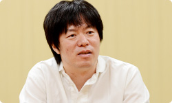 水木 任天堂ネットワーク事業部の水木です。 今回は『Miiverse』のプロデューサーというか、 ディレクターというか、 そんなようなことを担当しました。 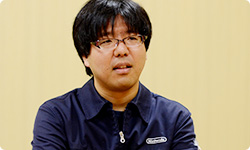 岩田 水木さんは『Miiverse』の 言い出しっぺでもありますね。 では水木さん、最初に 『Miiverse』はどうやってはじまったのか、 という話をしていただけますか？ 水木 はい。正直にお話しすると、 もともと僕の中で『Miiverse』の出発点は、 先日サービスが終了になった 『Wiiの間』（※3）にあると思っているんです。 サービスの構造はぜんぜん似ていないんですけど。 ※3 『Wiiの間』＝２００９年５月～２０１２年４月まで配信された、Wiiチャンネルのひとつ。「ショッピング」「ホームシアター」「いろんな間」の３つのサービスからなる“お茶の間コミュニケーションチャンネル”として、Wiiの間でしか買えないオリジナル商品に加え、グルメ・日用品・ファッション・インテリアなどのショッピングや、映画やアニメ・懐かしの番組などを期間レンタルで視聴できる有償映像サービスなどを提供していた。くわしくは、 社長が訊く『Wiiの間』を参照。 岩田 水木さんは当時、 『Wiiの間』のクライアント側の仕事を 担当していたんですよね。 水木 はい。それで、 「Wii Uのネットワークサービスはどうあるべきか？」 ということについて、 Wiiの間株式会社（※4）の別府（裕介）さん（※5）と 以前から相談していたんです。 相談とはいっても雑談のような感じなんですけど。 そのころに別府さんが、 「Miiを中心にした任天堂ならではのサービスができないか？」 という話をよくされていたんです。 ※4 Wiiの間株式会社＝『Wiiの間』を運営していた、任天堂と電通が共同で設立した会社。現在は、任天堂ネットワークサービス株式会社に社名を変更している。 ※5 別府裕介＝前 Wiiの間株式会社取締役社長。現 任天堂ネットワークサービス株式会社取締役社長。 岩田 まあ、その意味でいうと、 『Wiiの間』はまぎれもなく 任天堂ならではのサービスでしたよね。 水木 はい。やりたかったことは意外と似ています。 ただ『Wiiの間』は基本的に、 運営側がコンテンツをつくって お客さんに提供するものでしたが、 その仕組みでは高い頻度で更新ができなくて、 そこが強い反省点でもありました。 岩田 毎日、更新はしていたものの、 受け取るお客さんによって、 配信したものが面白いこともあれば、 ヒットしないこともあるので、 こちらが用意できる有限のコンテンツで すべての方に満足していただくことが とても難しかったですからね。 水木 はい。だから毎日、 お客さんに楽しんでいただけるものをつくるには、 全部を自分たちでつくるのではなく、 「より多くの方が参加できる“ＵＧＣ（※6）サービス” として実現させたほうがいいんじゃないか？」 と思ったんです。 ※6 ＵＧＣ＝User Generated Content（ユーザー生成コンテンツ）。利用者によって制作・生成されたさまざまなコンテンツの総称。 近藤 そうだったんですね。 『Wiiの間』との関係、いまはじめて知りました（笑）。 岩田 『Wiiの間』と『Miiverse』は単体で見たら、 Miiが登場すること以外は ほとんど共通点がないサービスですけど、 水木さんが『Wiiの間』の経験をしていなかったら、 また、毎日更新する大変さを目の当たりにしていなかったら、 この『Miiverse』は生まれていなかったかもしれませんね。 水木 あと、僕が『Miiverse』のことをプレゼンで提案したとき、 たしか「Miiを使った新しいネットワークサービス」 という表現をしたと思うんですけど、 岩田さんがプレゼンの直後に 「これは“共感ネットワーク”ですね」って言われたんです。 突然言われたので驚きました。 岩田 水木さんの話を聞いてね、 同じゲームを体験した人が、 「あー、そうそう、自分もそう思ってた」 という“共感”でつながってわかりあえると、 「両方が幸せになれるな」と思ったんです。 だから「どうしたら共感が伝わりあい、増幅しあえるか？」 ということを軸に据えて、 サービスを考えていけばいいから、 「これは“共感ネットワーク”なんだ」 という話をした記憶があります。 水木 そのとき『Miiverse』の核となっていたのは、 「プレイ履歴のある人同士がコミュニティ（※7）で交流できる」 というものでした。 ※7 コミュニティ＝共通の興味を持つ者同士が、さまざまな意見を交換したり、閲覧したりできるオンライン上の場所のこと。 岩田 『Miiverse』はゲーム機と統合したサービスですし、 遊んだソフトのプレイ履歴を確認しあえるようにすれば、 そのことを前提に、やりとりができますからね。 近藤 同じ体験をした人同士だからこそ、 交流しやすくなるんですね。 水木 その後、社内の開発プロデューサーや ディレクターだけでなく、 宣伝部署であったり、営業関係の方だったり、 さまざまな人と相談・・・というか、 雑談をくり返して（笑）、 仕様を詰めていった感じです。 岩田 水木さんはある一定期間、 社内を歩きまわって、 ひたすら雑談をくり返していましたよね。 水木 はい。だから「自分が考えた」というより、 いろんな人と話していくなかで、 「ぼんやりしていたものが少しずつ明確になっていった」 という感じです。 最初は「Miiわらわら」と呼んでいた 「わらわら広場」（※8）も、まさにそうなんですけど。 ※8 「わらわら広場」＝Wii Uを立ち上げたホームメニュー画面に、ゲームのアイコンと、そのゲームを遊んでいる人たちのMiiが出てきて、交流する仕組み。出てくるゲームのアイコンは、すべて自分が持っているものとは限らず、さまざまなMiiがわらわらと登場し、画面上には感想などが表示される。いわば、ゲームのホームメニュー画面とおすすめ機能を統合したかたち。 岩田 「Miiがいっぱい出てきて、わらわらする何か」 みたいな話は、わりと初期から話題になっていましたよね。 水木 そうですね。 雑談をする相手の中に、 「すれちがいMii広場」（※9）を担当した 河本（浩一）さん（※10）がいたんですけど、 「単なるウェブサービスのような画面ばかりでなくて、 何か特徴的な画面が欲しいよね」と河本さんに言われて、 「そうだよな・・・」と思って、 「じゃあとりあえずMiiがなんかわらわらしてたらよいかな？」 みたいに雑談したのがキッカケです。 その後、Wii Uの本体メニューをつくっているチームが 「Wii Uの起動画面にMiiをわらわらと出しましょう」 と言ってくれて、 いまのような「わらわら広場」というかたちで 仕上げてくれたんです。 ※9 「すれちがいMii広場」＝ニンテンドー3DSに内蔵されているソフトのひとつ。すれちがい通信ですれちがった人のMiiが集まってくる広場のことで、相手のプロフィールを見たり、『すれちがい伝説』などを楽しむことができる。 ※10 河本浩一＝企画開発本部環境制作部所属。ニンテンドー3DSの「すれちがいMii広場」や、付属ＡＲカードを使った「ＡＲゲームズ」などのディレクションを担当。過去、 社長が訊く『ものすごく脳を鍛える５分間の鬼トレーニング』開発スタッフ篇に登場。 岩田 じつは、Wii Uの本体メニューは、 『どうぶつの森』（※11）シリーズのディレクターを務めてきた 野上（恒）さん（※12）がまとめているんですよね。 ※11 『どうぶつの森』＝２００１年４月、NINTENDO64用ソフトとして発売された『どうぶつの森』が１作目。最新作は２０１２年１１月８日、ニンテンドー3DS用ソフトとして発売の『とびだせ どうぶつの森』。 ※12 野上恒＝情報開発本部制作部所属。『どうぶつの森』シリーズのディレクターを担当。過去、 社長が訊く『街へいこうよ どうぶつの森』に登場。 水木 Wii Uの総合プロデューサーの 江口（勝也）さん（※13）と、野上さんは、 『どうぶつの森』の経験もあって、 かなり早い段階で『Miiverse』の構想に 賛成してくれたおふたりでした。 江口さんが推進してくださったおかげで、 『New スーパーマリオブラザーズ U』（※14）や 『Nintendo Land』（※15）は、 積極的に『Miiverse』に対応してもらえました。 ※13 江口勝也＝情報開発本部制作部部長。『どうぶつの森』シリーズをはじめ、『Wii Sports』や『Wii Sports Resort』などのプロデューサーも担当。また、Wii Uの開発では、総合プロデューサーを担当し、『Nintendo Land』のプロデューサーも担当。過去、 Ｅ３ ２０１２特別篇 社長が訊く『Wii U』に登場。 ※14
Wii U GamePad 篇 Miiverse プロデュース 篇 Miiverse 開発スタッフ 篇 インターネットブラウザー 篇 Wii U Chat 篇 New スーパーマリオブラザーズ U 篇 ZombiU（ゾンビU） 篇 Nintendo×JOYSOUND Wii カラオケ U 篇 Nintendo Land 篇 Nintendo TVii 篇 Wii Street U powered by Google 篇 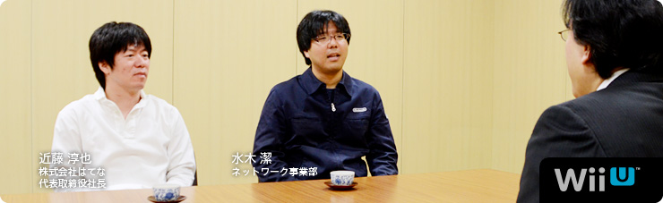 本文の一部を引用される場合は、必ず、本ページのURLを明記、または本ページへのリンクをしていただくようお願いいたします。 1. “共感ネットワーク” 2. ２階建てのサービス構造 3. ネットワーク方針の大転換 4. 「Wiiが街に」 岩田 多分、冒頭に載っている写真をご覧になった方が、 「なぜ、はてな（※1）の近藤さんがここに？」 と思われるかもしれません。 ※1 はてな＝株式会社はてな。「はてなブックマーク」「はてなダイアリー（はてなブログ）」をはじめとする、「はてな」の各サービスを開発し、インターネット上で運営を行う。設立は２００１年。本社は京都市。 近藤 ああ、そうですよね（笑）。 岩田 『Miiverse』をつくることになったときから、 ずっとごいっしょさせていただいています。 今回は「『Miiverse』プロデュース篇」ということで、 よろしくお願いします。 一同 よろしくお願いします。 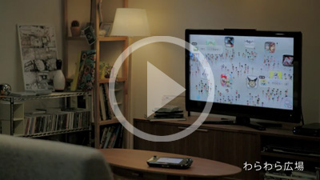 『Miiverse』紹介映像を見る 岩田 『Miiverse』というのは、 Miiを通じて世界中の人たちがつながる、 Wii Uにシステムレベルで統合された ゲームをもっと楽しむためのネットワークサービスです。 好きなゲームソフトの広場で感想を述べあったり、 手描きの絵や、コメントを書き込んだりしながら、 お客さん同士で交流を楽しむことができるサービスです。 また、「お互いのＩＤを打ち込む」という これまでのフレンドコード（※2）を打ち込むのと 同じような方法に加えて、『Miiverse』を使うことで、 いままでより簡単にフレンド関係を 成立させることもできるようになります。 ではまず、近藤さんから自己紹介をお願いします。 ※2 フレンドコード＝WiiやニンテンドーDS、ニンテンドー3DSなどで、インターネットに接続するときに、割り振られるIDのこと。お互いにフレンドコードを登録すると、離れた場所にいる友達とインターネットを通じて通信プレイが楽しめる。 近藤 株式会社はてなの近藤です。 『Miiverse』では、 初期のコンセプトメイキングなどを担当しました。 よろしくお願いします。 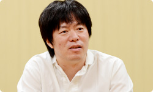 水木 任天堂ネットワーク事業部の水木です。 今回は『Miiverse』のプロデューサーというか、 ディレクターというか、 そんなようなことを担当しました。 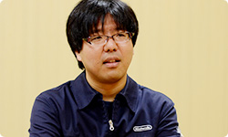 岩田 水木さんは『Miiverse』の 言い出しっぺでもありますね。 では水木さん、最初に 『Miiverse』はどうやってはじまったのか、 という話をしていただけますか？ 水木 はい。正直にお話しすると、 もともと僕の中で『Miiverse』の出発点は、 先日サービスが終了になった 『Wiiの間』（※3）にあると思っているんです。 サービスの構造はぜんぜん似ていないんですけど。 ※3 『Wiiの間』＝２００９年５月～２０１２年４月まで配信された、Wiiチャンネルのひとつ。「ショッピング」「ホームシアター」「いろんな間」の３つのサービスからなる“お茶の間コミュニケーションチャンネル”として、Wiiの間でしか買えないオリジナル商品に加え、グルメ・日用品・ファッション・インテリアなどのショッピングや、映画やアニメ・懐かしの番組などを期間レンタルで視聴できる有償映像サービスなどを提供していた。くわしくは、 社長が訊く『Wiiの間』を参照。 岩田 水木さんは当時、 『Wiiの間』のクライアント側の仕事を 担当していたんですよね。 水木 はい。それで、 「Wii Uのネットワークサービスはどうあるべきか？」 ということについて、 Wiiの間株式会社（※4）の別府（裕介）さん（※5）と 以前から相談していたんです。 相談とはいっても雑談のような感じなんですけど。 そのころに別府さんが、 「Miiを中心にした任天堂ならではのサービスができないか？」 という話をよくされていたんです。 ※4 Wiiの間株式会社＝『Wiiの間』を運営していた、任天堂と電通が共同で設立した会社。現在は、任天堂ネットワークサービス株式会社に社名を変更している。 ※5 別府裕介＝前 Wiiの間株式会社取締役社長。現 任天堂ネットワークサービス株式会社取締役社長。 岩田 まあ、その意味でいうと、 『Wiiの間』はまぎれもなく 任天堂ならではのサービスでしたよね。 水木 はい。やりたかったことは意外と似ています。 ただ『Wiiの間』は基本的に、 運営側がコンテンツをつくって お客さんに提供するものでしたが、 その仕組みでは高い頻度で更新ができなくて、 そこが強い反省点でもありました。 岩田 毎日、更新はしていたものの、 受け取るお客さんによって、 配信したものが面白いこともあれば、 ヒットしないこともあるので、 こちらが用意できる有限のコンテンツで すべての方に満足していただくことが とても難しかったですからね。 水木 はい。だから毎日、 お客さんに楽しんでいただけるものをつくるには、 全部を自分たちでつくるのではなく、 「より多くの方が参加できる“ＵＧＣ（※6）サービス” として実現させたほうがいいんじゃないか？」 と思ったんです。 ※6 ＵＧＣ＝User Generated Content（ユーザー生成コンテンツ）。利用者によって制作・生成されたさまざまなコンテンツの総称。 近藤 そうだったんですね。 『Wiiの間』との関係、いまはじめて知りました（笑）。 岩田 『Wiiの間』と『Miiverse』は単体で見たら、 Miiが登場すること以外は ほとんど共通点がないサービスですけど、 水木さんが『Wiiの間』の経験をしていなかったら、 また、毎日更新する大変さを目の当たりにしていなかったら、 この『Miiverse』は生まれていなかったかもしれませんね。 水木 あと、僕が『Miiverse』のことをプレゼンで提案したとき、 たしか「Miiを使った新しいネットワークサービス」 という表現をしたと思うんですけど、 岩田さんがプレゼンの直後に 「これは“共感ネットワーク”ですね」って言われたんです。 突然言われたので驚きました。 岩田 水木さんの話を聞いてね、 同じゲームを体験した人が、 「あー、そうそう、自分もそう思ってた」 という“共感”でつながってわかりあえると、 「両方が幸せになれるな」と思ったんです。 だから「どうしたら共感が伝わりあい、増幅しあえるか？」 ということを軸に据えて、 サービスを考えていけばいいから、 「これは“共感ネットワーク”なんだ」 という話をした記憶があります。 水木 そのとき『Miiverse』の核となっていたのは、 「プレイ履歴のある人同士がコミュニティ（※7）で交流できる」 というものでした。 ※7 コミュニティ＝共通の興味を持つ者同士が、さまざまな意見を交換したり、閲覧したりできるオンライン上の場所のこと。 岩田 『Miiverse』はゲーム機と統合したサービスですし、 遊んだソフトのプレイ履歴を確認しあえるようにすれば、 そのことを前提に、やりとりができますからね。 近藤 同じ体験をした人同士だからこそ、 交流しやすくなるんですね。 水木 その後、社内の開発プロデューサーや ディレクターだけでなく、 宣伝部署であったり、営業関係の方だったり、 さまざまな人と相談・・・というか、 雑談をくり返して（笑）、 仕様を詰めていった感じです。 岩田 水木さんはある一定期間、 社内を歩きまわって、 ひたすら雑談をくり返していましたよね。 水木 はい。だから「自分が考えた」というより、 いろんな人と話していくなかで、 「ぼんやりしていたものが少しずつ明確になっていった」 という感じです。 最初は「Miiわらわら」と呼んでいた 「わらわら広場」（※8）も、まさにそうなんですけど。 ※8 「わらわら広場」＝Wii Uを立ち上げたホームメニュー画面に、ゲームのアイコンと、そのゲームを遊んでいる人たちのMiiが出てきて、交流する仕組み。出てくるゲームのアイコンは、すべて自分が持っているものとは限らず、さまざまなMiiがわらわらと登場し、画面上には感想などが表示される。いわば、ゲームのホームメニュー画面とおすすめ機能を統合したかたち。 岩田 「Miiがいっぱい出てきて、わらわらする何か」 みたいな話は、わりと初期から話題になっていましたよね。 水木 そうですね。 雑談をする相手の中に、 「すれちがいMii広場」（※9）を担当した 河本（浩一）さん（※10）がいたんですけど、 「単なるウェブサービスのような画面ばかりでなくて、 何か特徴的な画面が欲しいよね」と河本さんに言われて、 「そうだよな・・・」と思って、 「じゃあとりあえずMiiがなんかわらわらしてたらよいかな？」 みたいに雑談したのがキッカケです。 その後、Wii Uの本体メニューをつくっているチームが 「Wii Uの起動画面にMiiをわらわらと出しましょう」 と言ってくれて、 いまのような「わらわら広場」というかたちで 仕上げてくれたんです。 ※9 「すれちがいMii広場」＝ニンテンドー3DSに内蔵されているソフトのひとつ。すれちがい通信ですれちがった人のMiiが集まってくる広場のことで、相手のプロフィールを見たり、『すれちがい伝説』などを楽しむことができる。 ※10 河本浩一＝企画開発本部環境制作部所属。ニンテンドー3DSの「すれちがいMii広場」や、付属ＡＲカードを使った「ＡＲゲームズ」などのディレクションを担当。過去、 社長が訊く『ものすごく脳を鍛える５分間の鬼トレーニング』開発スタッフ篇に登場。 岩田 じつは、Wii Uの本体メニューは、 『どうぶつの森』（※11）シリーズのディレクターを務めてきた 野上（恒）さん（※12）がまとめているんですよね。 ※11 『どうぶつの森』＝２００１年４月、NINTENDO64用ソフトとして発売された『どうぶつの森』が１作目。最新作は２０１２年１１月８日、ニンテンドー3DS用ソフトとして発売の『とびだせ どうぶつの森』。 ※12 野上恒＝情報開発本部制作部所属。『どうぶつの森』シリーズのディレクターを担当。過去、 社長が訊く『街へいこうよ どうぶつの森』に登場。 水木 Wii Uの総合プロデューサーの 江口（勝也）さん（※13）と、野上さんは、 『どうぶつの森』の経験もあって、 かなり早い段階で『Miiverse』の構想に 賛成してくれたおふたりでした。 江口さんが推進してくださったおかげで、 『New スーパーマリオブラザーズ U』（※14）や 『Nintendo Land』（※15）は、 積極的に『Miiverse』に対応してもらえました。 ※13 江口勝也＝情報開発本部制作部部長。『どうぶつの森』シリーズをはじめ、『Wii Sports』や『Wii Sports Resort』などのプロデューサーも担当。また、Wii Uの開発では、総合プロデューサーを担当し、『Nintendo Land』のプロデューサーも担当。過去、 Ｅ３ ２０１２特別篇 社長が訊く『Wii U』に登場。 ※14
Miiverse プロデュース 篇 Miiverse 開発スタッフ 篇 インターネットブラウザー 篇 Wii U Chat 篇 New スーパーマリオブラザーズ U 篇 ZombiU（ゾンビU） 篇 Nintendo×JOYSOUND Wii カラオケ U 篇 Nintendo Land 篇 Nintendo TVii 篇 Wii Street U powered by Google 篇 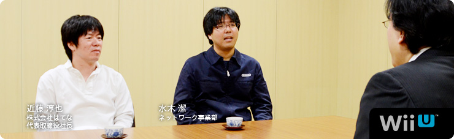 本文の一部を引用される場合は、必ず、本ページのURLを明記、または本ページへのリンクをしていただくようお願いいたします。 1. “共感ネットワーク” 2. ２階建てのサービス構造 3. ネットワーク方針の大転換 4. 「Wiiが街に」 岩田 多分、冒頭に載っている写真をご覧になった方が、 「なぜ、はてな（※1）の近藤さんがここに？」 と思われるかもしれません。 ※1 はてな＝株式会社はてな。「はてなブックマーク」「はてなダイアリー（はてなブログ）」をはじめとする、「はてな」の各サービスを開発し、インターネット上で運営を行う。設立は２００１年。本社は京都市。 近藤 ああ、そうですよね（笑）。 岩田 『Miiverse』をつくることになったときから、 ずっとごいっしょさせていただいています。 今回は「『Miiverse』プロデュース篇」ということで、 よろしくお願いします。 一同 よろしくお願いします。 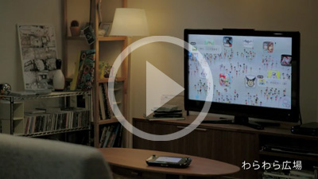 『Miiverse』紹介映像を見る 岩田 『Miiverse』というのは、 Miiを通じて世界中の人たちがつながる、 Wii Uにシステムレベルで統合された ゲームをもっと楽しむためのネットワークサービスです。 好きなゲームソフトの広場で感想を述べあったり、 手描きの絵や、コメントを書き込んだりしながら、 お客さん同士で交流を楽しむことができるサービスです。 また、「お互いのＩＤを打ち込む」という これまでのフレンドコード（※2）を打ち込むのと 同じような方法に加えて、『Miiverse』を使うことで、 いままでより簡単にフレンド関係を 成立させることもできるようになります。 ではまず、近藤さんから自己紹介をお願いします。 ※2 フレンドコード＝WiiやニンテンドーDS、ニンテンドー3DSなどで、インターネットに接続するときに、割り振られるIDのこと。お互いにフレンドコードを登録すると、離れた場所にいる友達とインターネットを通じて通信プレイが楽しめる。 近藤 株式会社はてなの近藤です。 『Miiverse』では、 初期のコンセプトメイキングなどを担当しました。 よろしくお願いします。 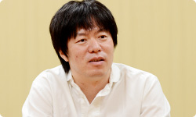 水木 任天堂ネットワーク事業部の水木です。 今回は『Miiverse』のプロデューサーというか、 ディレクターというか、 そんなようなことを担当しました。 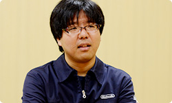 岩田 水木さんは『Miiverse』の 言い出しっぺでもありますね。 では水木さん、最初に 『Miiverse』はどうやってはじまったのか、 という話をしていただけますか？ 水木 はい。正直にお話しすると、 もともと僕の中で『Miiverse』の出発点は、 先日サービスが終了になった 『Wiiの間』（※3）にあると思っているんです。 サービスの構造はぜんぜん似ていないんですけど。 ※3 『Wiiの間』＝２００９年５月～２０１２年４月まで配信された、Wiiチャンネルのひとつ。「ショッピング」「ホームシアター」「いろんな間」の３つのサービスからなる“お茶の間コミュニケーションチャンネル”として、Wiiの間でしか買えないオリジナル商品に加え、グルメ・日用品・ファッション・インテリアなどのショッピングや、映画やアニメ・懐かしの番組などを期間レンタルで視聴できる有償映像サービスなどを提供していた。くわしくは、 社長が訊く『Wiiの間』を参照。 岩田 水木さんは当時、 『Wiiの間』のクライアント側の仕事を 担当していたんですよね。 水木 はい。それで、 「Wii Uのネットワークサービスはどうあるべきか？」 ということについて、 Wiiの間株式会社（※4）の別府（裕介）さん（※5）と 以前から相談していたんです。 相談とはいっても雑談のような感じなんですけど。 そのころに別府さんが、 「Miiを中心にした任天堂ならではのサービスができないか？」 という話をよくされていたんです。 ※4 Wiiの間株式会社＝『Wiiの間』を運営していた、任天堂と電通が共同で設立した会社。現在は、任天堂ネットワークサービス株式会社に社名を変更している。 ※5 別府裕介＝前 Wiiの間株式会社取締役社長。現 任天堂ネットワークサービス株式会社取締役社長。 岩田 まあ、その意味でいうと、 『Wiiの間』はまぎれもなく 任天堂ならではのサービスでしたよね。 水木 はい。やりたかったことは意外と似ています。 ただ『Wiiの間』は基本的に、 運営側がコンテンツをつくって お客さんに提供するものでしたが、 その仕組みでは高い頻度で更新ができなくて、 そこが強い反省点でもありました。 岩田 毎日、更新はしていたものの、 受け取るお客さんによって、 配信したものが面白いこともあれば、 ヒットしないこともあるので、 こちらが用意できる有限のコンテンツで すべての方に満足していただくことが とても難しかったですからね。 水木 はい。だから毎日、 お客さんに楽しんでいただけるものをつくるには、 全部を自分たちでつくるのではなく、 「より多くの方が参加できる“ＵＧＣ（※6）サービス” として実現させたほうがいいんじゃないか？」 と思ったんです。 ※6 ＵＧＣ＝User Generated Content（ユーザー生成コンテンツ）。利用者によって制作・生成されたさまざまなコンテンツの総称。 近藤 そうだったんですね。 『Wiiの間』との関係、いまはじめて知りました（笑）。 岩田 『Wiiの間』と『Miiverse』は単体で見たら、 Miiが登場すること以外は ほとんど共通点がないサービスですけど、 水木さんが『Wiiの間』の経験をしていなかったら、 また、毎日更新する大変さを目の当たりにしていなかったら、 この『Miiverse』は生まれていなかったかもしれませんね。 水木 あと、僕が『Miiverse』のことをプレゼンで提案したとき、 たしか「Miiを使った新しいネットワークサービス」 という表現をしたと思うんですけど、 岩田さんがプレゼンの直後に 「これは“共感ネットワーク”ですね」って言われたんです。 突然言われたので驚きました。 岩田 水木さんの話を聞いてね、 同じゲームを体験した人が、 「あー、そうそう、自分もそう思ってた」 という“共感”でつながってわかりあえると、 「両方が幸せになれるな」と思ったんです。 だから「どうしたら共感が伝わりあい、増幅しあえるか？」 ということを軸に据えて、 サービスを考えていけばいいから、 「これは“共感ネットワーク”なんだ」 という話をした記憶があります。 水木 そのとき『Miiverse』の核となっていたのは、 「プレイ履歴のある人同士がコミュニティ（※7）で交流できる」 というものでした。 ※7 コミュニティ＝共通の興味を持つ者同士が、さまざまな意見を交換したり、閲覧したりできるオンライン上の場所のこと。 岩田 『Miiverse』はゲーム機と統合したサービスですし、 遊んだソフトのプレイ履歴を確認しあえるようにすれば、 そのことを前提に、やりとりができますからね。 近藤 同じ体験をした人同士だからこそ、 交流しやすくなるんですね。 水木 その後、社内の開発プロデューサーや ディレクターだけでなく、 宣伝部署であったり、営業関係の方だったり、 さまざまな人と相談・・・というか、 雑談をくり返して（笑）、 仕様を詰めていった感じです。 岩田 水木さんはある一定期間、 社内を歩きまわって、 ひたすら雑談をくり返していましたよね。 水木 はい。だから「自分が考えた」というより、 いろんな人と話していくなかで、 「ぼんやりしていたものが少しずつ明確になっていった」 という感じです。 最初は「Miiわらわら」と呼んでいた 「わらわら広場」（※8）も、まさにそうなんですけど。 ※8 「わらわら広場」＝Wii Uを立ち上げたホームメニュー画面に、ゲームのアイコンと、そのゲームを遊んでいる人たちのMiiが出てきて、交流する仕組み。出てくるゲームのアイコンは、すべて自分が持っているものとは限らず、さまざまなMiiがわらわらと登場し、画面上には感想などが表示される。いわば、ゲームのホームメニュー画面とおすすめ機能を統合したかたち。 岩田 「Miiがいっぱい出てきて、わらわらする何か」 みたいな話は、わりと初期から話題になっていましたよね。 水木 そうですね。 雑談をする相手の中に、 「すれちがいMii広場」（※9）を担当した 河本（浩一）さん（※10）がいたんですけど、 「単なるウェブサービスのような画面ばかりでなくて、 何か特徴的な画面が欲しいよね」と河本さんに言われて、 「そうだよな・・・」と思って、 「じゃあとりあえずMiiがなんかわらわらしてたらよいかな？」 みたいに雑談したのがキッカケです。 その後、Wii Uの本体メニューをつくっているチームが 「Wii Uの起動画面にMiiをわらわらと出しましょう」 と言ってくれて、 いまのような「わらわら広場」というかたちで 仕上げてくれたんです。 ※9 「すれちがいMii広場」＝ニンテンドー3DSに内蔵されているソフトのひとつ。すれちがい通信ですれちがった人のMiiが集まってくる広場のことで、相手のプロフィールを見たり、『すれちがい伝説』などを楽しむことができる。 ※10 河本浩一＝企画開発本部環境制作部所属。ニンテンドー3DSの「すれちがいMii広場」や、付属ＡＲカードを使った「ＡＲゲームズ」などのディレクションを担当。過去、 社長が訊く『ものすごく脳を鍛える５分間の鬼トレーニング』開発スタッフ篇に登場。 岩田 じつは、Wii Uの本体メニューは、 『どうぶつの森』（※11）シリーズのディレクターを務めてきた 野上（恒）さん（※12）がまとめているんですよね。 ※11 『どうぶつの森』＝２００１年４月、NINTENDO64用ソフトとして発売された『どうぶつの森』が１作目。最新作は２０１２年１１月８日、ニンテンドー3DS用ソフトとして発売の『とびだせ どうぶつの森』。 ※12 野上恒＝情報開発本部制作部所属。『どうぶつの森』シリーズのディレクターを担当。過去、 社長が訊く『街へいこうよ どうぶつの森』に登場。 水木 Wii Uの総合プロデューサーの 江口（勝也）さん（※13）と、野上さんは、 『どうぶつの森』の経験もあって、 かなり早い段階で『Miiverse』の構想に 賛成してくれたおふたりでした。 江口さんが推進してくださったおかげで、 『New スーパーマリオブラザーズ U』（※14）や 『Nintendo Land』（※15）は、 積極的に『Miiverse』に対応してもらえました。 ※13 江口勝也＝情報開発本部制作部部長。『どうぶつの森』シリーズをはじめ、『Wii Sports』や『Wii Sports Resort』などのプロデューサーも担当。また、Wii Uの開発では、総合プロデューサーを担当し、『Nintendo Land』のプロデューサーも担当。過去、 Ｅ３ ２０１２特別篇 社長が訊く『Wii U』に登場。 ※14
Miiverse 開発スタッフ 篇 インターネットブラウザー 篇 Wii U Chat 篇 New スーパーマリオブラザーズ U 篇 ZombiU（ゾンビU） 篇 Nintendo×JOYSOUND Wii カラオケ U 篇 Nintendo Land 篇 Nintendo TVii 篇 Wii Street U powered by Google 篇 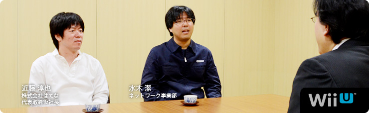 本文の一部を引用される場合は、必ず、本ページのURLを明記、または本ページへのリンクをしていただくようお願いいたします。 1. “共感ネットワーク” 2. ２階建てのサービス構造 3. ネットワーク方針の大転換 4. 「Wiiが街に」 岩田 多分、冒頭に載っている写真をご覧になった方が、 「なぜ、はてな（※1）の近藤さんがここに？」 と思われるかもしれません。 ※1 はてな＝株式会社はてな。「はてなブックマーク」「はてなダイアリー（はてなブログ）」をはじめとする、「はてな」の各サービスを開発し、インターネット上で運営を行う。設立は２００１年。本社は京都市。 近藤 ああ、そうですよね（笑）。 岩田 『Miiverse』をつくることになったときから、 ずっとごいっしょさせていただいています。 今回は「『Miiverse』プロデュース篇」ということで、 よろしくお願いします。 一同 よろしくお願いします。 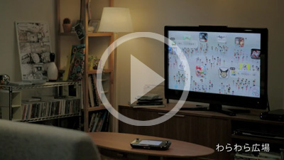 『Miiverse』紹介映像を見る 岩田 『Miiverse』というのは、 Miiを通じて世界中の人たちがつながる、 Wii Uにシステムレベルで統合された ゲームをもっと楽しむためのネットワークサービスです。 好きなゲームソフトの広場で感想を述べあったり、 手描きの絵や、コメントを書き込んだりしながら、 お客さん同士で交流を楽しむことができるサービスです。 また、「お互いのＩＤを打ち込む」という これまでのフレンドコード（※2）を打ち込むのと 同じような方法に加えて、『Miiverse』を使うことで、 いままでより簡単にフレンド関係を 成立させることもできるようになります。 ではまず、近藤さんから自己紹介をお願いします。 ※2 フレンドコード＝WiiやニンテンドーDS、ニンテンドー3DSなどで、インターネットに接続するときに、割り振られるIDのこと。お互いにフレンドコードを登録すると、離れた場所にいる友達とインターネットを通じて通信プレイが楽しめる。 近藤 株式会社はてなの近藤です。 『Miiverse』では、 初期のコンセプトメイキングなどを担当しました。 よろしくお願いします。 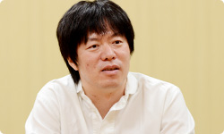 水木 任天堂ネットワーク事業部の水木です。 今回は『Miiverse』のプロデューサーというか、 ディレクターというか、 そんなようなことを担当しました。 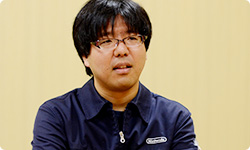 岩田 水木さんは『Miiverse』の 言い出しっぺでもありますね。 では水木さん、最初に 『Miiverse』はどうやってはじまったのか、 という話をしていただけますか？ 水木 はい。正直にお話しすると、 もともと僕の中で『Miiverse』の出発点は、 先日サービスが終了になった 『Wiiの間』（※3）にあると思っているんです。 サービスの構造はぜんぜん似ていないんですけど。 ※3 『Wiiの間』＝２００９年５月～２０１２年４月まで配信された、Wiiチャンネルのひとつ。「ショッピング」「ホームシアター」「いろんな間」の３つのサービスからなる“お茶の間コミュニケーションチャンネル”として、Wiiの間でしか買えないオリジナル商品に加え、グルメ・日用品・ファッション・インテリアなどのショッピングや、映画やアニメ・懐かしの番組などを期間レンタルで視聴できる有償映像サービスなどを提供していた。くわしくは、 社長が訊く『Wiiの間』を参照。 岩田 水木さんは当時、 『Wiiの間』のクライアント側の仕事を 担当していたんですよね。 水木 はい。それで、 「Wii Uのネットワークサービスはどうあるべきか？」 ということについて、 Wiiの間株式会社（※4）の別府（裕介）さん（※5）と 以前から相談していたんです。 相談とはいっても雑談のような感じなんですけど。 そのころに別府さんが、 「Miiを中心にした任天堂ならではのサービスができないか？」 という話をよくされていたんです。 ※4 Wiiの間株式会社＝『Wiiの間』を運営していた、任天堂と電通が共同で設立した会社。現在は、任天堂ネットワークサービス株式会社に社名を変更している。 ※5 別府裕介＝前 Wiiの間株式会社取締役社長。現 任天堂ネットワークサービス株式会社取締役社長。 岩田 まあ、その意味でいうと、 『Wiiの間』はまぎれもなく 任天堂ならではのサービスでしたよね。 水木 はい。やりたかったことは意外と似ています。 ただ『Wiiの間』は基本的に、 運営側がコンテンツをつくって お客さんに提供するものでしたが、 その仕組みでは高い頻度で更新ができなくて、 そこが強い反省点でもありました。 岩田 毎日、更新はしていたものの、 受け取るお客さんによって、 配信したものが面白いこともあれば、 ヒットしないこともあるので、 こちらが用意できる有限のコンテンツで すべての方に満足していただくことが とても難しかったですからね。 水木 はい。だから毎日、 お客さんに楽しんでいただけるものをつくるには、 全部を自分たちでつくるのではなく、 「より多くの方が参加できる“ＵＧＣ（※6）サービス” として実現させたほうがいいんじゃないか？」 と思ったんです。 ※6 ＵＧＣ＝User Generated Content（ユーザー生成コンテンツ）。利用者によって制作・生成されたさまざまなコンテンツの総称。 近藤 そうだったんですね。 『Wiiの間』との関係、いまはじめて知りました（笑）。 岩田 『Wiiの間』と『Miiverse』は単体で見たら、 Miiが登場すること以外は ほとんど共通点がないサービスですけど、 水木さんが『Wiiの間』の経験をしていなかったら、 また、毎日更新する大変さを目の当たりにしていなかったら、 この『Miiverse』は生まれていなかったかもしれませんね。 水木 あと、僕が『Miiverse』のことをプレゼンで提案したとき、 たしか「Miiを使った新しいネットワークサービス」 という表現をしたと思うんですけど、 岩田さんがプレゼンの直後に 「これは“共感ネットワーク”ですね」って言われたんです。 突然言われたので驚きました。 岩田 水木さんの話を聞いてね、 同じゲームを体験した人が、 「あー、そうそう、自分もそう思ってた」 という“共感”でつながってわかりあえると、 「両方が幸せになれるな」と思ったんです。 だから「どうしたら共感が伝わりあい、増幅しあえるか？」 ということを軸に据えて、 サービスを考えていけばいいから、 「これは“共感ネットワーク”なんだ」 という話をした記憶があります。 水木 そのとき『Miiverse』の核となっていたのは、 「プレイ履歴のある人同士がコミュニティ（※7）で交流できる」 というものでした。 ※7 コミュニティ＝共通の興味を持つ者同士が、さまざまな意見を交換したり、閲覧したりできるオンライン上の場所のこと。 岩田 『Miiverse』はゲーム機と統合したサービスですし、 遊んだソフトのプレイ履歴を確認しあえるようにすれば、 そのことを前提に、やりとりができますからね。 近藤 同じ体験をした人同士だからこそ、 交流しやすくなるんですね。 水木 その後、社内の開発プロデューサーや ディレクターだけでなく、 宣伝部署であったり、営業関係の方だったり、 さまざまな人と相談・・・というか、 雑談をくり返して（笑）、 仕様を詰めていった感じです。 岩田 水木さんはある一定期間、 社内を歩きまわって、 ひたすら雑談をくり返していましたよね。 水木 はい。だから「自分が考えた」というより、 いろんな人と話していくなかで、 「ぼんやりしていたものが少しずつ明確になっていった」 という感じです。 最初は「Miiわらわら」と呼んでいた 「わらわら広場」（※8）も、まさにそうなんですけど。 ※8 「わらわら広場」＝Wii Uを立ち上げたホームメニュー画面に、ゲームのアイコンと、そのゲームを遊んでいる人たちのMiiが出てきて、交流する仕組み。出てくるゲームのアイコンは、すべて自分が持っているものとは限らず、さまざまなMiiがわらわらと登場し、画面上には感想などが表示される。いわば、ゲームのホームメニュー画面とおすすめ機能を統合したかたち。 岩田 「Miiがいっぱい出てきて、わらわらする何か」 みたいな話は、わりと初期から話題になっていましたよね。 水木 そうですね。 雑談をする相手の中に、 「すれちがいMii広場」（※9）を担当した 河本（浩一）さん（※10）がいたんですけど、 「単なるウェブサービスのような画面ばかりでなくて、 何か特徴的な画面が欲しいよね」と河本さんに言われて、 「そうだよな・・・」と思って、 「じゃあとりあえずMiiがなんかわらわらしてたらよいかな？」 みたいに雑談したのがキッカケです。 その後、Wii Uの本体メニューをつくっているチームが 「Wii Uの起動画面にMiiをわらわらと出しましょう」 と言ってくれて、 いまのような「わらわら広場」というかたちで 仕上げてくれたんです。 ※9 「すれちがいMii広場」＝ニンテンドー3DSに内蔵されているソフトのひとつ。すれちがい通信ですれちがった人のMiiが集まってくる広場のことで、相手のプロフィールを見たり、『すれちがい伝説』などを楽しむことができる。 ※10 河本浩一＝企画開発本部環境制作部所属。ニンテンドー3DSの「すれちがいMii広場」や、付属ＡＲカードを使った「ＡＲゲームズ」などのディレクションを担当。過去、 社長が訊く『ものすごく脳を鍛える５分間の鬼トレーニング』開発スタッフ篇に登場。 岩田 じつは、Wii Uの本体メニューは、 『どうぶつの森』（※11）シリーズのディレクターを務めてきた 野上（恒）さん（※12）がまとめているんですよね。 ※11 『どうぶつの森』＝２００１年４月、NINTENDO64用ソフトとして発売された『どうぶつの森』が１作目。最新作は２０１２年１１月８日、ニンテンドー3DS用ソフトとして発売の『とびだせ どうぶつの森』。 ※12 野上恒＝情報開発本部制作部所属。『どうぶつの森』シリーズのディレクターを担当。過去、 社長が訊く『街へいこうよ どうぶつの森』に登場。 水木 Wii Uの総合プロデューサーの 江口（勝也）さん（※13）と、野上さんは、 『どうぶつの森』の経験もあって、 かなり早い段階で『Miiverse』の構想に 賛成してくれたおふたりでした。 江口さんが推進してくださったおかげで、 『New スーパーマリオブラザーズ U』（※14）や 『Nintendo Land』（※15）は、 積極的に『Miiverse』に対応してもらえました。 ※13 江口勝也＝情報開発本部制作部部長。『どうぶつの森』シリーズをはじめ、『Wii Sports』や『Wii Sports Resort』などのプロデューサーも担当。また、Wii Uの開発では、総合プロデューサーを担当し、『Nintendo Land』のプロデューサーも担当。過去、 Ｅ３ ２０１２特別篇 社長が訊く『Wii U』に登場。 ※14
インターネットブラウザー 篇 Wii U Chat 篇 New スーパーマリオブラザーズ U 篇 ZombiU（ゾンビU） 篇 Nintendo×JOYSOUND Wii カラオケ U 篇 Nintendo Land 篇 Nintendo TVii 篇 Wii Street U powered by Google 篇 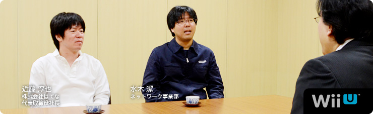 本文の一部を引用される場合は、必ず、本ページのURLを明記、または本ページへのリンクをしていただくようお願いいたします。 1. “共感ネットワーク” 2. ２階建てのサービス構造 3. ネットワーク方針の大転換 4. 「Wiiが街に」 岩田 多分、冒頭に載っている写真をご覧になった方が、 「なぜ、はてな（※1）の近藤さんがここに？」 と思われるかもしれません。 ※1 はてな＝株式会社はてな。「はてなブックマーク」「はてなダイアリー（はてなブログ）」をはじめとする、「はてな」の各サービスを開発し、インターネット上で運営を行う。設立は２００１年。本社は京都市。 近藤 ああ、そうですよね（笑）。 岩田 『Miiverse』をつくることになったときから、 ずっとごいっしょさせていただいています。 今回は「『Miiverse』プロデュース篇」ということで、 よろしくお願いします。 一同 よろしくお願いします。 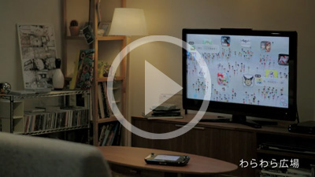 『Miiverse』紹介映像を見る 岩田 『Miiverse』というのは、 Miiを通じて世界中の人たちがつながる、 Wii Uにシステムレベルで統合された ゲームをもっと楽しむためのネットワークサービスです。 好きなゲームソフトの広場で感想を述べあったり、 手描きの絵や、コメントを書き込んだりしながら、 お客さん同士で交流を楽しむことができるサービスです。 また、「お互いのＩＤを打ち込む」という これまでのフレンドコード（※2）を打ち込むのと 同じような方法に加えて、『Miiverse』を使うことで、 いままでより簡単にフレンド関係を 成立させることもできるようになります。 ではまず、近藤さんから自己紹介をお願いします。 ※2 フレンドコード＝WiiやニンテンドーDS、ニンテンドー3DSなどで、インターネットに接続するときに、割り振られるIDのこと。お互いにフレンドコードを登録すると、離れた場所にいる友達とインターネットを通じて通信プレイが楽しめる。 近藤 株式会社はてなの近藤です。 『Miiverse』では、 初期のコンセプトメイキングなどを担当しました。 よろしくお願いします。 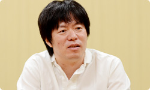 水木 任天堂ネットワーク事業部の水木です。 今回は『Miiverse』のプロデューサーというか、 ディレクターというか、 そんなようなことを担当しました。 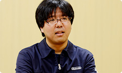 岩田 水木さんは『Miiverse』の 言い出しっぺでもありますね。 では水木さん、最初に 『Miiverse』はどうやってはじまったのか、 という話をしていただけますか？ 水木 はい。正直にお話しすると、 もともと僕の中で『Miiverse』の出発点は、 先日サービスが終了になった 『Wiiの間』（※3）にあると思っているんです。 サービスの構造はぜんぜん似ていないんですけど。 ※3 『Wiiの間』＝２００９年５月～２０１２年４月まで配信された、Wiiチャンネルのひとつ。「ショッピング」「ホームシアター」「いろんな間」の３つのサービスからなる“お茶の間コミュニケーションチャンネル”として、Wiiの間でしか買えないオリジナル商品に加え、グルメ・日用品・ファッション・インテリアなどのショッピングや、映画やアニメ・懐かしの番組などを期間レンタルで視聴できる有償映像サービスなどを提供していた。くわしくは、 社長が訊く『Wiiの間』を参照。 岩田 水木さんは当時、 『Wiiの間』のクライアント側の仕事を 担当していたんですよね。 水木 はい。それで、 「Wii Uのネットワークサービスはどうあるべきか？」 ということについて、 Wiiの間株式会社（※4）の別府（裕介）さん（※5）と 以前から相談していたんです。 相談とはいっても雑談のような感じなんですけど。 そのころに別府さんが、 「Miiを中心にした任天堂ならではのサービスができないか？」 という話をよくされていたんです。 ※4 Wiiの間株式会社＝『Wiiの間』を運営していた、任天堂と電通が共同で設立した会社。現在は、任天堂ネットワークサービス株式会社に社名を変更している。 ※5 別府裕介＝前 Wiiの間株式会社取締役社長。現 任天堂ネットワークサービス株式会社取締役社長。 岩田 まあ、その意味でいうと、 『Wiiの間』はまぎれもなく 任天堂ならではのサービスでしたよね。 水木 はい。やりたかったことは意外と似ています。 ただ『Wiiの間』は基本的に、 運営側がコンテンツをつくって お客さんに提供するものでしたが、 その仕組みでは高い頻度で更新ができなくて、 そこが強い反省点でもありました。 岩田 毎日、更新はしていたものの、 受け取るお客さんによって、 配信したものが面白いこともあれば、 ヒットしないこともあるので、 こちらが用意できる有限のコンテンツで すべての方に満足していただくことが とても難しかったですからね。 水木 はい。だから毎日、 お客さんに楽しんでいただけるものをつくるには、 全部を自分たちでつくるのではなく、 「より多くの方が参加できる“ＵＧＣ（※6）サービス” として実現させたほうがいいんじゃないか？」 と思ったんです。 ※6 ＵＧＣ＝User Generated Content（ユーザー生成コンテンツ）。利用者によって制作・生成されたさまざまなコンテンツの総称。 近藤 そうだったんですね。 『Wiiの間』との関係、いまはじめて知りました（笑）。 岩田 『Wiiの間』と『Miiverse』は単体で見たら、 Miiが登場すること以外は ほとんど共通点がないサービスですけど、 水木さんが『Wiiの間』の経験をしていなかったら、 また、毎日更新する大変さを目の当たりにしていなかったら、 この『Miiverse』は生まれていなかったかもしれませんね。 水木 あと、僕が『Miiverse』のことをプレゼンで提案したとき、 たしか「Miiを使った新しいネットワークサービス」 という表現をしたと思うんですけど、 岩田さんがプレゼンの直後に 「これは“共感ネットワーク”ですね」って言われたんです。 突然言われたので驚きました。 岩田 水木さんの話を聞いてね、 同じゲームを体験した人が、 「あー、そうそう、自分もそう思ってた」 という“共感”でつながってわかりあえると、 「両方が幸せになれるな」と思ったんです。 だから「どうしたら共感が伝わりあい、増幅しあえるか？」 ということを軸に据えて、 サービスを考えていけばいいから、 「これは“共感ネットワーク”なんだ」 という話をした記憶があります。 水木 そのとき『Miiverse』の核となっていたのは、 「プレイ履歴のある人同士がコミュニティ（※7）で交流できる」 というものでした。 ※7 コミュニティ＝共通の興味を持つ者同士が、さまざまな意見を交換したり、閲覧したりできるオンライン上の場所のこと。 岩田 『Miiverse』はゲーム機と統合したサービスですし、 遊んだソフトのプレイ履歴を確認しあえるようにすれば、 そのことを前提に、やりとりができますからね。 近藤 同じ体験をした人同士だからこそ、 交流しやすくなるんですね。 水木 その後、社内の開発プロデューサーや ディレクターだけでなく、 宣伝部署であったり、営業関係の方だったり、 さまざまな人と相談・・・というか、 雑談をくり返して（笑）、 仕様を詰めていった感じです。 岩田 水木さんはある一定期間、 社内を歩きまわって、 ひたすら雑談をくり返していましたよね。 水木 はい。だから「自分が考えた」というより、 いろんな人と話していくなかで、 「ぼんやりしていたものが少しずつ明確になっていった」 という感じです。 最初は「Miiわらわら」と呼んでいた 「わらわら広場」（※8）も、まさにそうなんですけど。 ※8 「わらわら広場」＝Wii Uを立ち上げたホームメニュー画面に、ゲームのアイコンと、そのゲームを遊んでいる人たちのMiiが出てきて、交流する仕組み。出てくるゲームのアイコンは、すべて自分が持っているものとは限らず、さまざまなMiiがわらわらと登場し、画面上には感想などが表示される。いわば、ゲームのホームメニュー画面とおすすめ機能を統合したかたち。 岩田 「Miiがいっぱい出てきて、わらわらする何か」 みたいな話は、わりと初期から話題になっていましたよね。 水木 そうですね。 雑談をする相手の中に、 「すれちがいMii広場」（※9）を担当した 河本（浩一）さん（※10）がいたんですけど、 「単なるウェブサービスのような画面ばかりでなくて、 何か特徴的な画面が欲しいよね」と河本さんに言われて、 「そうだよな・・・」と思って、 「じゃあとりあえずMiiがなんかわらわらしてたらよいかな？」 みたいに雑談したのがキッカケです。 その後、Wii Uの本体メニューをつくっているチームが 「Wii Uの起動画面にMiiをわらわらと出しましょう」 と言ってくれて、 いまのような「わらわら広場」というかたちで 仕上げてくれたんです。 ※9 「すれちがいMii広場」＝ニンテンドー3DSに内蔵されているソフトのひとつ。すれちがい通信ですれちがった人のMiiが集まってくる広場のことで、相手のプロフィールを見たり、『すれちがい伝説』などを楽しむことができる。 ※10 河本浩一＝企画開発本部環境制作部所属。ニンテンドー3DSの「すれちがいMii広場」や、付属ＡＲカードを使った「ＡＲゲームズ」などのディレクションを担当。過去、 社長が訊く『ものすごく脳を鍛える５分間の鬼トレーニング』開発スタッフ篇に登場。 岩田 じつは、Wii Uの本体メニューは、 『どうぶつの森』（※11）シリーズのディレクターを務めてきた 野上（恒）さん（※12）がまとめているんですよね。 ※11 『どうぶつの森』＝２００１年４月、NINTENDO64用ソフトとして発売された『どうぶつの森』が１作目。最新作は２０１２年１１月８日、ニンテンドー3DS用ソフトとして発売の『とびだせ どうぶつの森』。 ※12 野上恒＝情報開発本部制作部所属。『どうぶつの森』シリーズのディレクターを担当。過去、 社長が訊く『街へいこうよ どうぶつの森』に登場。 水木 Wii Uの総合プロデューサーの 江口（勝也）さん（※13）と、野上さんは、 『どうぶつの森』の経験もあって、 かなり早い段階で『Miiverse』の構想に 賛成してくれたおふたりでした。 江口さんが推進してくださったおかげで、 『New スーパーマリオブラザーズ U』（※14）や 『Nintendo Land』（※15）は、 積極的に『Miiverse』に対応してもらえました。 ※13 江口勝也＝情報開発本部制作部部長。『どうぶつの森』シリーズをはじめ、『Wii Sports』や『Wii Sports Resort』などのプロデューサーも担当。また、Wii Uの開発では、総合プロデューサーを担当し、『Nintendo Land』のプロデューサーも担当。過去、 Ｅ３ ２０１２特別篇 社長が訊く『Wii U』に登場。 ※14
Wii U Chat 篇 New スーパーマリオブラザーズ U 篇 ZombiU（ゾンビU） 篇 Nintendo×JOYSOUND Wii カラオケ U 篇 Nintendo Land 篇 Nintendo TVii 篇 Wii Street U powered by Google 篇 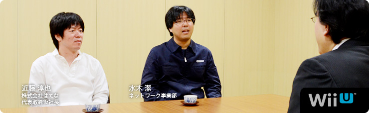 本文の一部を引用される場合は、必ず、本ページのURLを明記、または本ページへのリンクをしていただくようお願いいたします。 1. “共感ネットワーク” 2. ２階建てのサービス構造 3. ネットワーク方針の大転換 4. 「Wiiが街に」 岩田 多分、冒頭に載っている写真をご覧になった方が、 「なぜ、はてな（※1）の近藤さんがここに？」 と思われるかもしれません。 ※1 はてな＝株式会社はてな。「はてなブックマーク」「はてなダイアリー（はてなブログ）」をはじめとする、「はてな」の各サービスを開発し、インターネット上で運営を行う。設立は２００１年。本社は京都市。 近藤 ああ、そうですよね（笑）。 岩田 『Miiverse』をつくることになったときから、 ずっとごいっしょさせていただいています。 今回は「『Miiverse』プロデュース篇」ということで、 よろしくお願いします。 一同 よろしくお願いします。 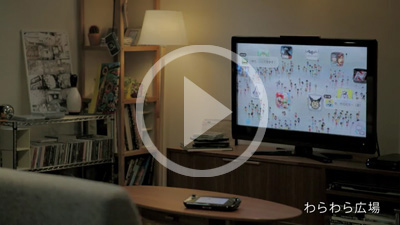 『Miiverse』紹介映像を見る 岩田 『Miiverse』というのは、 Miiを通じて世界中の人たちがつながる、 Wii Uにシステムレベルで統合された ゲームをもっと楽しむためのネットワークサービスです。 好きなゲームソフトの広場で感想を述べあったり、 手描きの絵や、コメントを書き込んだりしながら、 お客さん同士で交流を楽しむことができるサービスです。 また、「お互いのＩＤを打ち込む」という これまでのフレンドコード（※2）を打ち込むのと 同じような方法に加えて、『Miiverse』を使うことで、 いままでより簡単にフレンド関係を 成立させることもできるようになります。 ではまず、近藤さんから自己紹介をお願いします。 ※2 フレンドコード＝WiiやニンテンドーDS、ニンテンドー3DSなどで、インターネットに接続するときに、割り振られるIDのこと。お互いにフレンドコードを登録すると、離れた場所にいる友達とインターネットを通じて通信プレイが楽しめる。 近藤 株式会社はてなの近藤です。 『Miiverse』では、 初期のコンセプトメイキングなどを担当しました。 よろしくお願いします。 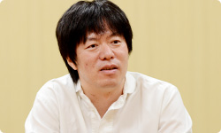 水木 任天堂ネットワーク事業部の水木です。 今回は『Miiverse』のプロデューサーというか、 ディレクターというか、 そんなようなことを担当しました。 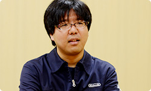 岩田 水木さんは『Miiverse』の 言い出しっぺでもありますね。 では水木さん、最初に 『Miiverse』はどうやってはじまったのか、 という話をしていただけますか？ 水木 はい。正直にお話しすると、 もともと僕の中で『Miiverse』の出発点は、 先日サービスが終了になった 『Wiiの間』（※3）にあると思っているんです。 サービスの構造はぜんぜん似ていないんですけど。 ※3 『Wiiの間』＝２００９年５月～２０１２年４月まで配信された、Wiiチャンネルのひとつ。「ショッピング」「ホームシアター」「いろんな間」の３つのサービスからなる“お茶の間コミュニケーションチャンネル”として、Wiiの間でしか買えないオリジナル商品に加え、グルメ・日用品・ファッション・インテリアなどのショッピングや、映画やアニメ・懐かしの番組などを期間レンタルで視聴できる有償映像サービスなどを提供していた。くわしくは、 社長が訊く『Wiiの間』を参照。 岩田 水木さんは当時、 『Wiiの間』のクライアント側の仕事を 担当していたんですよね。 水木 はい。それで、 「Wii Uのネットワークサービスはどうあるべきか？」 ということについて、 Wiiの間株式会社（※4）の別府（裕介）さん（※5）と 以前から相談していたんです。 相談とはいっても雑談のような感じなんですけど。 そのころに別府さんが、 「Miiを中心にした任天堂ならではのサービスができないか？」 という話をよくされていたんです。 ※4 Wiiの間株式会社＝『Wiiの間』を運営していた、任天堂と電通が共同で設立した会社。現在は、任天堂ネットワークサービス株式会社に社名を変更している。 ※5 別府裕介＝前 Wiiの間株式会社取締役社長。現 任天堂ネットワークサービス株式会社取締役社長。 岩田 まあ、その意味でいうと、 『Wiiの間』はまぎれもなく 任天堂ならではのサービスでしたよね。 水木 はい。やりたかったことは意外と似ています。 ただ『Wiiの間』は基本的に、 運営側がコンテンツをつくって お客さんに提供するものでしたが、 その仕組みでは高い頻度で更新ができなくて、 そこが強い反省点でもありました。 岩田 毎日、更新はしていたものの、 受け取るお客さんによって、 配信したものが面白いこともあれば、 ヒットしないこともあるので、 こちらが用意できる有限のコンテンツで すべての方に満足していただくことが とても難しかったですからね。 水木 はい。だから毎日、 お客さんに楽しんでいただけるものをつくるには、 全部を自分たちでつくるのではなく、 「より多くの方が参加できる“ＵＧＣ（※6）サービス” として実現させたほうがいいんじゃないか？」 と思ったんです。 ※6 ＵＧＣ＝User Generated Content（ユーザー生成コンテンツ）。利用者によって制作・生成されたさまざまなコンテンツの総称。 近藤 そうだったんですね。 『Wiiの間』との関係、いまはじめて知りました（笑）。 岩田 『Wiiの間』と『Miiverse』は単体で見たら、 Miiが登場すること以外は ほとんど共通点がないサービスですけど、 水木さんが『Wiiの間』の経験をしていなかったら、 また、毎日更新する大変さを目の当たりにしていなかったら、 この『Miiverse』は生まれていなかったかもしれませんね。 水木 あと、僕が『Miiverse』のことをプレゼンで提案したとき、 たしか「Miiを使った新しいネットワークサービス」 という表現をしたと思うんですけど、 岩田さんがプレゼンの直後に 「これは“共感ネットワーク”ですね」って言われたんです。 突然言われたので驚きました。 岩田 水木さんの話を聞いてね、 同じゲームを体験した人が、 「あー、そうそう、自分もそう思ってた」 という“共感”でつながってわかりあえると、 「両方が幸せになれるな」と思ったんです。 だから「どうしたら共感が伝わりあい、増幅しあえるか？」 ということを軸に据えて、 サービスを考えていけばいいから、 「これは“共感ネットワーク”なんだ」 という話をした記憶があります。 水木 そのとき『Miiverse』の核となっていたのは、 「プレイ履歴のある人同士がコミュニティ（※7）で交流できる」 というものでした。 ※7 コミュニティ＝共通の興味を持つ者同士が、さまざまな意見を交換したり、閲覧したりできるオンライン上の場所のこと。 岩田 『Miiverse』はゲーム機と統合したサービスですし、 遊んだソフトのプレイ履歴を確認しあえるようにすれば、 そのことを前提に、やりとりができますからね。 近藤 同じ体験をした人同士だからこそ、 交流しやすくなるんですね。 水木 その後、社内の開発プロデューサーや ディレクターだけでなく、 宣伝部署であったり、営業関係の方だったり、 さまざまな人と相談・・・というか、 雑談をくり返して（笑）、 仕様を詰めていった感じです。 岩田 水木さんはある一定期間、 社内を歩きまわって、 ひたすら雑談をくり返していましたよね。 水木 はい。だから「自分が考えた」というより、 いろんな人と話していくなかで、 「ぼんやりしていたものが少しずつ明確になっていった」 という感じです。 最初は「Miiわらわら」と呼んでいた 「わらわら広場」（※8）も、まさにそうなんですけど。 ※8 「わらわら広場」＝Wii Uを立ち上げたホームメニュー画面に、ゲームのアイコンと、そのゲームを遊んでいる人たちのMiiが出てきて、交流する仕組み。出てくるゲームのアイコンは、すべて自分が持っているものとは限らず、さまざまなMiiがわらわらと登場し、画面上には感想などが表示される。いわば、ゲームのホームメニュー画面とおすすめ機能を統合したかたち。 岩田 「Miiがいっぱい出てきて、わらわらする何か」 みたいな話は、わりと初期から話題になっていましたよね。 水木 そうですね。 雑談をする相手の中に、 「すれちがいMii広場」（※9）を担当した 河本（浩一）さん（※10）がいたんですけど、 「単なるウェブサービスのような画面ばかりでなくて、 何か特徴的な画面が欲しいよね」と河本さんに言われて、 「そうだよな・・・」と思って、 「じゃあとりあえずMiiがなんかわらわらしてたらよいかな？」 みたいに雑談したのがキッカケです。 その後、Wii Uの本体メニューをつくっているチームが 「Wii Uの起動画面にMiiをわらわらと出しましょう」 と言ってくれて、 いまのような「わらわら広場」というかたちで 仕上げてくれたんです。 ※9 「すれちがいMii広場」＝ニンテンドー3DSに内蔵されているソフトのひとつ。すれちがい通信ですれちがった人のMiiが集まってくる広場のことで、相手のプロフィールを見たり、『すれちがい伝説』などを楽しむことができる。 ※10 河本浩一＝企画開発本部環境制作部所属。ニンテンドー3DSの「すれちがいMii広場」や、付属ＡＲカードを使った「ＡＲゲームズ」などのディレクションを担当。過去、 社長が訊く『ものすごく脳を鍛える５分間の鬼トレーニング』開発スタッフ篇に登場。 岩田 じつは、Wii Uの本体メニューは、 『どうぶつの森』（※11）シリーズのディレクターを務めてきた 野上（恒）さん（※12）がまとめているんですよね。 ※11 『どうぶつの森』＝２００１年４月、NINTENDO64用ソフトとして発売された『どうぶつの森』が１作目。最新作は２０１２年１１月８日、ニンテンドー3DS用ソフトとして発売の『とびだせ どうぶつの森』。 ※12 野上恒＝情報開発本部制作部所属。『どうぶつの森』シリーズのディレクターを担当。過去、 社長が訊く『街へいこうよ どうぶつの森』に登場。 水木 Wii Uの総合プロデューサーの 江口（勝也）さん（※13）と、野上さんは、 『どうぶつの森』の経験もあって、 かなり早い段階で『Miiverse』の構想に 賛成してくれたおふたりでした。 江口さんが推進してくださったおかげで、 『New スーパーマリオブラザーズ U』（※14）や 『Nintendo Land』（※15）は、 積極的に『Miiverse』に対応してもらえました。 ※13 江口勝也＝情報開発本部制作部部長。『どうぶつの森』シリーズをはじめ、『Wii Sports』や『Wii Sports Resort』などのプロデューサーも担当。また、Wii Uの開発では、総合プロデューサーを担当し、『Nintendo Land』のプロデューサーも担当。過去、 Ｅ３ ２０１２特別篇 社長が訊く『Wii U』に登場。 ※14
New スーパーマリオブラザーズ U 篇 ZombiU（ゾンビU） 篇 Nintendo×JOYSOUND Wii カラオケ U 篇 Nintendo Land 篇 Nintendo TVii 篇 Wii Street U powered by Google 篇 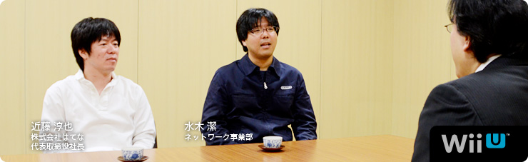 本文の一部を引用される場合は、必ず、本ページのURLを明記、または本ページへのリンクをしていただくようお願いいたします。 1. “共感ネットワーク” 2. ２階建てのサービス構造 3. ネットワーク方針の大転換 4. 「Wiiが街に」 岩田 多分、冒頭に載っている写真をご覧になった方が、 「なぜ、はてな（※1）の近藤さんがここに？」 と思われるかもしれません。 ※1 はてな＝株式会社はてな。「はてなブックマーク」「はてなダイアリー（はてなブログ）」をはじめとする、「はてな」の各サービスを開発し、インターネット上で運営を行う。設立は２００１年。本社は京都市。 近藤 ああ、そうですよね（笑）。 岩田 『Miiverse』をつくることになったときから、 ずっとごいっしょさせていただいています。 今回は「『Miiverse』プロデュース篇」ということで、 よろしくお願いします。 一同 よろしくお願いします。 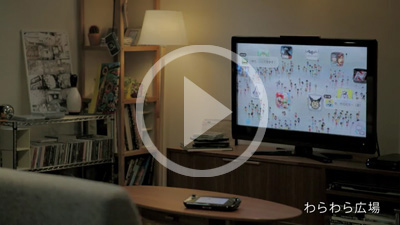 『Miiverse』紹介映像を見る 岩田 『Miiverse』というのは、 Miiを通じて世界中の人たちがつながる、 Wii Uにシステムレベルで統合された ゲームをもっと楽しむためのネットワークサービスです。 好きなゲームソフトの広場で感想を述べあったり、 手描きの絵や、コメントを書き込んだりしながら、 お客さん同士で交流を楽しむことができるサービスです。 また、「お互いのＩＤを打ち込む」という これまでのフレンドコード（※2）を打ち込むのと 同じような方法に加えて、『Miiverse』を使うことで、 いままでより簡単にフレンド関係を 成立させることもできるようになります。 ではまず、近藤さんから自己紹介をお願いします。 ※2 フレンドコード＝WiiやニンテンドーDS、ニンテンドー3DSなどで、インターネットに接続するときに、割り振られるIDのこと。お互いにフレンドコードを登録すると、離れた場所にいる友達とインターネットを通じて通信プレイが楽しめる。 近藤 株式会社はてなの近藤です。 『Miiverse』では、 初期のコンセプトメイキングなどを担当しました。 よろしくお願いします。 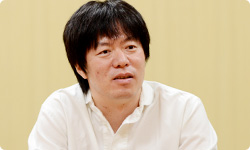 水木 任天堂ネットワーク事業部の水木です。 今回は『Miiverse』のプロデューサーというか、 ディレクターというか、 そんなようなことを担当しました。 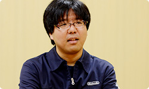 岩田 水木さんは『Miiverse』の 言い出しっぺでもありますね。 では水木さん、最初に 『Miiverse』はどうやってはじまったのか、 という話をしていただけますか？ 水木 はい。正直にお話しすると、 もともと僕の中で『Miiverse』の出発点は、 先日サービスが終了になった 『Wiiの間』（※3）にあると思っているんです。 サービスの構造はぜんぜん似ていないんですけど。 ※3 『Wiiの間』＝２００９年５月～２０１２年４月まで配信された、Wiiチャンネルのひとつ。「ショッピング」「ホームシアター」「いろんな間」の３つのサービスからなる“お茶の間コミュニケーションチャンネル”として、Wiiの間でしか買えないオリジナル商品に加え、グルメ・日用品・ファッション・インテリアなどのショッピングや、映画やアニメ・懐かしの番組などを期間レンタルで視聴できる有償映像サービスなどを提供していた。くわしくは、 社長が訊く『Wiiの間』を参照。 岩田 水木さんは当時、 『Wiiの間』のクライアント側の仕事を 担当していたんですよね。 水木 はい。それで、 「Wii Uのネットワークサービスはどうあるべきか？」 ということについて、 Wiiの間株式会社（※4）の別府（裕介）さん（※5）と 以前から相談していたんです。 相談とはいっても雑談のような感じなんですけど。 そのころに別府さんが、 「Miiを中心にした任天堂ならではのサービスができないか？」 という話をよくされていたんです。 ※4 Wiiの間株式会社＝『Wiiの間』を運営していた、任天堂と電通が共同で設立した会社。現在は、任天堂ネットワークサービス株式会社に社名を変更している。 ※5 別府裕介＝前 Wiiの間株式会社取締役社長。現 任天堂ネットワークサービス株式会社取締役社長。 岩田 まあ、その意味でいうと、 『Wiiの間』はまぎれもなく 任天堂ならではのサービスでしたよね。 水木 はい。やりたかったことは意外と似ています。 ただ『Wiiの間』は基本的に、 運営側がコンテンツをつくって お客さんに提供するものでしたが、 その仕組みでは高い頻度で更新ができなくて、 そこが強い反省点でもありました。 岩田 毎日、更新はしていたものの、 受け取るお客さんによって、 配信したものが面白いこともあれば、 ヒットしないこともあるので、 こちらが用意できる有限のコンテンツで すべての方に満足していただくことが とても難しかったですからね。 水木 はい。だから毎日、 お客さんに楽しんでいただけるものをつくるには、 全部を自分たちでつくるのではなく、 「より多くの方が参加できる“ＵＧＣ（※6）サービス” として実現させたほうがいいんじゃないか？」 と思ったんです。 ※6 ＵＧＣ＝User Generated Content（ユーザー生成コンテンツ）。利用者によって制作・生成されたさまざまなコンテンツの総称。 近藤 そうだったんですね。 『Wiiの間』との関係、いまはじめて知りました（笑）。 岩田 『Wiiの間』と『Miiverse』は単体で見たら、 Miiが登場すること以外は ほとんど共通点がないサービスですけど、 水木さんが『Wiiの間』の経験をしていなかったら、 また、毎日更新する大変さを目の当たりにしていなかったら、 この『Miiverse』は生まれていなかったかもしれませんね。 水木 あと、僕が『Miiverse』のことをプレゼンで提案したとき、 たしか「Miiを使った新しいネットワークサービス」 という表現をしたと思うんですけど、 岩田さんがプレゼンの直後に 「これは“共感ネットワーク”ですね」って言われたんです。 突然言われたので驚きました。 岩田 水木さんの話を聞いてね、 同じゲームを体験した人が、 「あー、そうそう、自分もそう思ってた」 という“共感”でつながってわかりあえると、 「両方が幸せになれるな」と思ったんです。 だから「どうしたら共感が伝わりあい、増幅しあえるか？」 ということを軸に据えて、 サービスを考えていけばいいから、 「これは“共感ネットワーク”なんだ」 という話をした記憶があります。 水木 そのとき『Miiverse』の核となっていたのは、 「プレイ履歴のある人同士がコミュニティ（※7）で交流できる」 というものでした。 ※7 コミュニティ＝共通の興味を持つ者同士が、さまざまな意見を交換したり、閲覧したりできるオンライン上の場所のこと。 岩田 『Miiverse』はゲーム機と統合したサービスですし、 遊んだソフトのプレイ履歴を確認しあえるようにすれば、 そのことを前提に、やりとりができますからね。 近藤 同じ体験をした人同士だからこそ、 交流しやすくなるんですね。 水木 その後、社内の開発プロデューサーや ディレクターだけでなく、 宣伝部署であったり、営業関係の方だったり、 さまざまな人と相談・・・というか、 雑談をくり返して（笑）、 仕様を詰めていった感じです。 岩田 水木さんはある一定期間、 社内を歩きまわって、 ひたすら雑談をくり返していましたよね。 水木 はい。だから「自分が考えた」というより、 いろんな人と話していくなかで、 「ぼんやりしていたものが少しずつ明確になっていった」 という感じです。 最初は「Miiわらわら」と呼んでいた 「わらわら広場」（※8）も、まさにそうなんですけど。 ※8 「わらわら広場」＝Wii Uを立ち上げたホームメニュー画面に、ゲームのアイコンと、そのゲームを遊んでいる人たちのMiiが出てきて、交流する仕組み。出てくるゲームのアイコンは、すべて自分が持っているものとは限らず、さまざまなMiiがわらわらと登場し、画面上には感想などが表示される。いわば、ゲームのホームメニュー画面とおすすめ機能を統合したかたち。 岩田 「Miiがいっぱい出てきて、わらわらする何か」 みたいな話は、わりと初期から話題になっていましたよね。 水木 そうですね。 雑談をする相手の中に、 「すれちがいMii広場」（※9）を担当した 河本（浩一）さん（※10）がいたんですけど、 「単なるウェブサービスのような画面ばかりでなくて、 何か特徴的な画面が欲しいよね」と河本さんに言われて、 「そうだよな・・・」と思って、 「じゃあとりあえずMiiがなんかわらわらしてたらよいかな？」 みたいに雑談したのがキッカケです。 その後、Wii Uの本体メニューをつくっているチームが 「Wii Uの起動画面にMiiをわらわらと出しましょう」 と言ってくれて、 いまのような「わらわら広場」というかたちで 仕上げてくれたんです。 ※9 「すれちがいMii広場」＝ニンテンドー3DSに内蔵されているソフトのひとつ。すれちがい通信ですれちがった人のMiiが集まってくる広場のことで、相手のプロフィールを見たり、『すれちがい伝説』などを楽しむことができる。 ※10 河本浩一＝企画開発本部環境制作部所属。ニンテンドー3DSの「すれちがいMii広場」や、付属ＡＲカードを使った「ＡＲゲームズ」などのディレクションを担当。過去、 社長が訊く『ものすごく脳を鍛える５分間の鬼トレーニング』開発スタッフ篇に登場。 岩田 じつは、Wii Uの本体メニューは、 『どうぶつの森』（※11）シリーズのディレクターを務めてきた 野上（恒）さん（※12）がまとめているんですよね。 ※11 『どうぶつの森』＝２００１年４月、NINTENDO64用ソフトとして発売された『どうぶつの森』が１作目。最新作は２０１２年１１月８日、ニンテンドー3DS用ソフトとして発売の『とびだせ どうぶつの森』。 ※12 野上恒＝情報開発本部制作部所属。『どうぶつの森』シリーズのディレクターを担当。過去、 社長が訊く『街へいこうよ どうぶつの森』に登場。 水木 Wii Uの総合プロデューサーの 江口（勝也）さん（※13）と、野上さんは、 『どうぶつの森』の経験もあって、 かなり早い段階で『Miiverse』の構想に 賛成してくれたおふたりでした。 江口さんが推進してくださったおかげで、 『New スーパーマリオブラザーズ U』（※14）や 『Nintendo Land』（※15）は、 積極的に『Miiverse』に対応してもらえました。 ※13 江口勝也＝情報開発本部制作部部長。『どうぶつの森』シリーズをはじめ、『Wii Sports』や『Wii Sports Resort』などのプロデューサーも担当。また、Wii Uの開発では、総合プロデューサーを担当し、『Nintendo Land』のプロデューサーも担当。過去、 Ｅ３ ２０１２特別篇 社長が訊く『Wii U』に登場。 ※14
ZombiU（ゾンビU） 篇 Nintendo×JOYSOUND Wii カラオケ U 篇 Nintendo Land 篇 Nintendo TVii 篇 Wii Street U powered by Google 篇 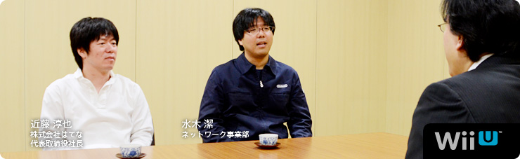 本文の一部を引用される場合は、必ず、本ページのURLを明記、または本ページへのリンクをしていただくようお願いいたします。 1. “共感ネットワーク” 2. ２階建てのサービス構造 3. ネットワーク方針の大転換 4. 「Wiiが街に」 岩田 多分、冒頭に載っている写真をご覧になった方が、 「なぜ、はてな（※1）の近藤さんがここに？」 と思われるかもしれません。 ※1 はてな＝株式会社はてな。「はてなブックマーク」「はてなダイアリー（はてなブログ）」をはじめとする、「はてな」の各サービスを開発し、インターネット上で運営を行う。設立は２００１年。本社は京都市。 近藤 ああ、そうですよね（笑）。 岩田 『Miiverse』をつくることになったときから、 ずっとごいっしょさせていただいています。 今回は「『Miiverse』プロデュース篇」ということで、 よろしくお願いします。 一同 よろしくお願いします。 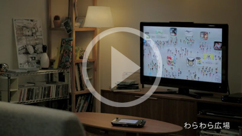 『Miiverse』紹介映像を見る 岩田 『Miiverse』というのは、 Miiを通じて世界中の人たちがつながる、 Wii Uにシステムレベルで統合された ゲームをもっと楽しむためのネットワークサービスです。 好きなゲームソフトの広場で感想を述べあったり、 手描きの絵や、コメントを書き込んだりしながら、 お客さん同士で交流を楽しむことができるサービスです。 また、「お互いのＩＤを打ち込む」という これまでのフレンドコード（※2）を打ち込むのと 同じような方法に加えて、『Miiverse』を使うことで、 いままでより簡単にフレンド関係を 成立させることもできるようになります。 ではまず、近藤さんから自己紹介をお願いします。 ※2 フレンドコード＝WiiやニンテンドーDS、ニンテンドー3DSなどで、インターネットに接続するときに、割り振られるIDのこと。お互いにフレンドコードを登録すると、離れた場所にいる友達とインターネットを通じて通信プレイが楽しめる。 近藤 株式会社はてなの近藤です。 『Miiverse』では、 初期のコンセプトメイキングなどを担当しました。 よろしくお願いします。 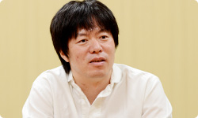 水木 任天堂ネットワーク事業部の水木です。 今回は『Miiverse』のプロデューサーというか、 ディレクターというか、 そんなようなことを担当しました。 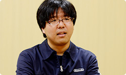 岩田 水木さんは『Miiverse』の 言い出しっぺでもありますね。 では水木さん、最初に 『Miiverse』はどうやってはじまったのか、 という話をしていただけますか？ 水木 はい。正直にお話しすると、 もともと僕の中で『Miiverse』の出発点は、 先日サービスが終了になった 『Wiiの間』（※3）にあると思っているんです。 サービスの構造はぜんぜん似ていないんですけど。 ※3 『Wiiの間』＝２００９年５月～２０１２年４月まで配信された、Wiiチャンネルのひとつ。「ショッピング」「ホームシアター」「いろんな間」の３つのサービスからなる“お茶の間コミュニケーションチャンネル”として、Wiiの間でしか買えないオリジナル商品に加え、グルメ・日用品・ファッション・インテリアなどのショッピングや、映画やアニメ・懐かしの番組などを期間レンタルで視聴できる有償映像サービスなどを提供していた。くわしくは、 社長が訊く『Wiiの間』を参照。 岩田 水木さんは当時、 『Wiiの間』のクライアント側の仕事を 担当していたんですよね。 水木 はい。それで、 「Wii Uのネットワークサービスはどうあるべきか？」 ということについて、 Wiiの間株式会社（※4）の別府（裕介）さん（※5）と 以前から相談していたんです。 相談とはいっても雑談のような感じなんですけど。 そのころに別府さんが、 「Miiを中心にした任天堂ならではのサービスができないか？」 という話をよくされていたんです。 ※4 Wiiの間株式会社＝『Wiiの間』を運営していた、任天堂と電通が共同で設立した会社。現在は、任天堂ネットワークサービス株式会社に社名を変更している。 ※5 別府裕介＝前 Wiiの間株式会社取締役社長。現 任天堂ネットワークサービス株式会社取締役社長。 岩田 まあ、その意味でいうと、 『Wiiの間』はまぎれもなく 任天堂ならではのサービスでしたよね。 水木 はい。やりたかったことは意外と似ています。 ただ『Wiiの間』は基本的に、 運営側がコンテンツをつくって お客さんに提供するものでしたが、 その仕組みでは高い頻度で更新ができなくて、 そこが強い反省点でもありました。 岩田 毎日、更新はしていたものの、 受け取るお客さんによって、 配信したものが面白いこともあれば、 ヒットしないこともあるので、 こちらが用意できる有限のコンテンツで すべての方に満足していただくことが とても難しかったですからね。 水木 はい。だから毎日、 お客さんに楽しんでいただけるものをつくるには、 全部を自分たちでつくるのではなく、 「より多くの方が参加できる“ＵＧＣ（※6）サービス” として実現させたほうがいいんじゃないか？」 と思ったんです。 ※6 ＵＧＣ＝User Generated Content（ユーザー生成コンテンツ）。利用者によって制作・生成されたさまざまなコンテンツの総称。 近藤 そうだったんですね。 『Wiiの間』との関係、いまはじめて知りました（笑）。 岩田 『Wiiの間』と『Miiverse』は単体で見たら、 Miiが登場すること以外は ほとんど共通点がないサービスですけど、 水木さんが『Wiiの間』の経験をしていなかったら、 また、毎日更新する大変さを目の当たりにしていなかったら、 この『Miiverse』は生まれていなかったかもしれませんね。 水木 あと、僕が『Miiverse』のことをプレゼンで提案したとき、 たしか「Miiを使った新しいネットワークサービス」 という表現をしたと思うんですけど、 岩田さんがプレゼンの直後に 「これは“共感ネットワーク”ですね」って言われたんです。 突然言われたので驚きました。 岩田 水木さんの話を聞いてね、 同じゲームを体験した人が、 「あー、そうそう、自分もそう思ってた」 という“共感”でつながってわかりあえると、 「両方が幸せになれるな」と思ったんです。 だから「どうしたら共感が伝わりあい、増幅しあえるか？」 ということを軸に据えて、 サービスを考えていけばいいから、 「これは“共感ネットワーク”なんだ」 という話をした記憶があります。 水木 そのとき『Miiverse』の核となっていたのは、 「プレイ履歴のある人同士がコミュニティ（※7）で交流できる」 というものでした。 ※7 コミュニティ＝共通の興味を持つ者同士が、さまざまな意見を交換したり、閲覧したりできるオンライン上の場所のこと。 岩田 『Miiverse』はゲーム機と統合したサービスですし、 遊んだソフトのプレイ履歴を確認しあえるようにすれば、 そのことを前提に、やりとりができますからね。 近藤 同じ体験をした人同士だからこそ、 交流しやすくなるんですね。 水木 その後、社内の開発プロデューサーや ディレクターだけでなく、 宣伝部署であったり、営業関係の方だったり、 さまざまな人と相談・・・というか、 雑談をくり返して（笑）、 仕様を詰めていった感じです。 岩田 水木さんはある一定期間、 社内を歩きまわって、 ひたすら雑談をくり返していましたよね。 水木 はい。だから「自分が考えた」というより、 いろんな人と話していくなかで、 「ぼんやりしていたものが少しずつ明確になっていった」 という感じです。 最初は「Miiわらわら」と呼んでいた 「わらわら広場」（※8）も、まさにそうなんですけど。 ※8 「わらわら広場」＝Wii Uを立ち上げたホームメニュー画面に、ゲームのアイコンと、そのゲームを遊んでいる人たちのMiiが出てきて、交流する仕組み。出てくるゲームのアイコンは、すべて自分が持っているものとは限らず、さまざまなMiiがわらわらと登場し、画面上には感想などが表示される。いわば、ゲームのホームメニュー画面とおすすめ機能を統合したかたち。 岩田 「Miiがいっぱい出てきて、わらわらする何か」 みたいな話は、わりと初期から話題になっていましたよね。 水木 そうですね。 雑談をする相手の中に、 「すれちがいMii広場」（※9）を担当した 河本（浩一）さん（※10）がいたんですけど、 「単なるウェブサービスのような画面ばかりでなくて、 何か特徴的な画面が欲しいよね」と河本さんに言われて、 「そうだよな・・・」と思って、 「じゃあとりあえずMiiがなんかわらわらしてたらよいかな？」 みたいに雑談したのがキッカケです。 その後、Wii Uの本体メニューをつくっているチームが 「Wii Uの起動画面にMiiをわらわらと出しましょう」 と言ってくれて、 いまのような「わらわら広場」というかたちで 仕上げてくれたんです。 ※9 「すれちがいMii広場」＝ニンテンドー3DSに内蔵されているソフトのひとつ。すれちがい通信ですれちがった人のMiiが集まってくる広場のことで、相手のプロフィールを見たり、『すれちがい伝説』などを楽しむことができる。 ※10 河本浩一＝企画開発本部環境制作部所属。ニンテンドー3DSの「すれちがいMii広場」や、付属ＡＲカードを使った「ＡＲゲームズ」などのディレクションを担当。過去、 社長が訊く『ものすごく脳を鍛える５分間の鬼トレーニング』開発スタッフ篇に登場。 岩田 じつは、Wii Uの本体メニューは、 『どうぶつの森』（※11）シリーズのディレクターを務めてきた 野上（恒）さん（※12）がまとめているんですよね。 ※11 『どうぶつの森』＝２００１年４月、NINTENDO64用ソフトとして発売された『どうぶつの森』が１作目。最新作は２０１２年１１月８日、ニンテンドー3DS用ソフトとして発売の『とびだせ どうぶつの森』。 ※12 野上恒＝情報開発本部制作部所属。『どうぶつの森』シリーズのディレクターを担当。過去、 社長が訊く『街へいこうよ どうぶつの森』に登場。 水木 Wii Uの総合プロデューサーの 江口（勝也）さん（※13）と、野上さんは、 『どうぶつの森』の経験もあって、 かなり早い段階で『Miiverse』の構想に 賛成してくれたおふたりでした。 江口さんが推進してくださったおかげで、 『New スーパーマリオブラザーズ U』（※14）や 『Nintendo Land』（※15）は、 積極的に『Miiverse』に対応してもらえました。 ※13 江口勝也＝情報開発本部制作部部長。『どうぶつの森』シリーズをはじめ、『Wii Sports』や『Wii Sports Resort』などのプロデューサーも担当。また、Wii Uの開発では、総合プロデューサーを担当し、『Nintendo Land』のプロデューサーも担当。過去、 Ｅ３ ２０１２特別篇 社長が訊く『Wii U』に登場。 ※14
Nintendo×JOYSOUND Wii カラオケ U 篇 Nintendo Land 篇 Nintendo TVii 篇 Wii Street U powered by Google 篇 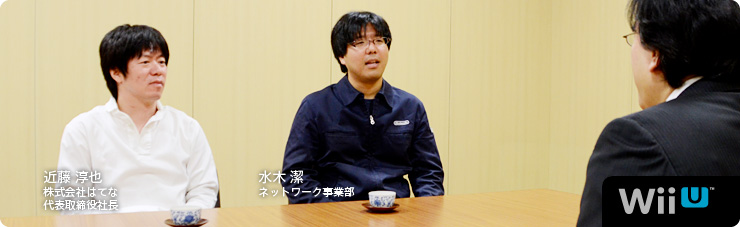 本文の一部を引用される場合は、必ず、本ページのURLを明記、または本ページへのリンクをしていただくようお願いいたします。 1. “共感ネットワーク” 2. ２階建てのサービス構造 3. ネットワーク方針の大転換 4. 「Wiiが街に」 岩田 多分、冒頭に載っている写真をご覧になった方が、 「なぜ、はてな（※1）の近藤さんがここに？」 と思われるかもしれません。 ※1 はてな＝株式会社はてな。「はてなブックマーク」「はてなダイアリー（はてなブログ）」をはじめとする、「はてな」の各サービスを開発し、インターネット上で運営を行う。設立は２００１年。本社は京都市。 近藤 ああ、そうですよね（笑）。 岩田 『Miiverse』をつくることになったときから、 ずっとごいっしょさせていただいています。 今回は「『Miiverse』プロデュース篇」ということで、 よろしくお願いします。 一同 よろしくお願いします。 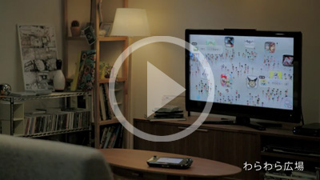 『Miiverse』紹介映像を見る 岩田 『Miiverse』というのは、 Miiを通じて世界中の人たちがつながる、 Wii Uにシステムレベルで統合された ゲームをもっと楽しむためのネットワークサービスです。 好きなゲームソフトの広場で感想を述べあったり、 手描きの絵や、コメントを書き込んだりしながら、 お客さん同士で交流を楽しむことができるサービスです。 また、「お互いのＩＤを打ち込む」という これまでのフレンドコード（※2）を打ち込むのと 同じような方法に加えて、『Miiverse』を使うことで、 いままでより簡単にフレンド関係を 成立させることもできるようになります。 ではまず、近藤さんから自己紹介をお願いします。 ※2 フレンドコード＝WiiやニンテンドーDS、ニンテンドー3DSなどで、インターネットに接続するときに、割り振られるIDのこと。お互いにフレンドコードを登録すると、離れた場所にいる友達とインターネットを通じて通信プレイが楽しめる。 近藤 株式会社はてなの近藤です。 『Miiverse』では、 初期のコンセプトメイキングなどを担当しました。 よろしくお願いします。 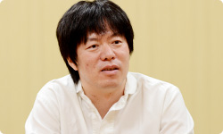 水木 任天堂ネットワーク事業部の水木です。 今回は『Miiverse』のプロデューサーというか、 ディレクターというか、 そんなようなことを担当しました。 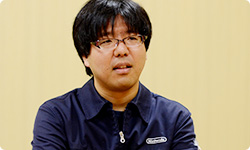 岩田 水木さんは『Miiverse』の 言い出しっぺでもありますね。 では水木さん、最初に 『Miiverse』はどうやってはじまったのか、 という話をしていただけますか？ 水木 はい。正直にお話しすると、 もともと僕の中で『Miiverse』の出発点は、 先日サービスが終了になった 『Wiiの間』（※3）にあると思っているんです。 サービスの構造はぜんぜん似ていないんですけど。 ※3 『Wiiの間』＝２００９年５月～２０１２年４月まで配信された、Wiiチャンネルのひとつ。「ショッピング」「ホームシアター」「いろんな間」の３つのサービスからなる“お茶の間コミュニケーションチャンネル”として、Wiiの間でしか買えないオリジナル商品に加え、グルメ・日用品・ファッション・インテリアなどのショッピングや、映画やアニメ・懐かしの番組などを期間レンタルで視聴できる有償映像サービスなどを提供していた。くわしくは、 社長が訊く『Wiiの間』を参照。 岩田 水木さんは当時、 『Wiiの間』のクライアント側の仕事を 担当していたんですよね。 水木 はい。それで、 「Wii Uのネットワークサービスはどうあるべきか？」 ということについて、 Wiiの間株式会社（※4）の別府（裕介）さん（※5）と 以前から相談していたんです。 相談とはいっても雑談のような感じなんですけど。 そのころに別府さんが、 「Miiを中心にした任天堂ならではのサービスができないか？」 という話をよくされていたんです。 ※4 Wiiの間株式会社＝『Wiiの間』を運営していた、任天堂と電通が共同で設立した会社。現在は、任天堂ネットワークサービス株式会社に社名を変更している。 ※5 別府裕介＝前 Wiiの間株式会社取締役社長。現 任天堂ネットワークサービス株式会社取締役社長。 岩田 まあ、その意味でいうと、 『Wiiの間』はまぎれもなく 任天堂ならではのサービスでしたよね。 水木 はい。やりたかったことは意外と似ています。 ただ『Wiiの間』は基本的に、 運営側がコンテンツをつくって お客さんに提供するものでしたが、 その仕組みでは高い頻度で更新ができなくて、 そこが強い反省点でもありました。 岩田 毎日、更新はしていたものの、 受け取るお客さんによって、 配信したものが面白いこともあれば、 ヒットしないこともあるので、 こちらが用意できる有限のコンテンツで すべての方に満足していただくことが とても難しかったですからね。 水木 はい。だから毎日、 お客さんに楽しんでいただけるものをつくるには、 全部を自分たちでつくるのではなく、 「より多くの方が参加できる“ＵＧＣ（※6）サービス” として実現させたほうがいいんじゃないか？」 と思ったんです。 ※6 ＵＧＣ＝User Generated Content（ユーザー生成コンテンツ）。利用者によって制作・生成されたさまざまなコンテンツの総称。 近藤 そうだったんですね。 『Wiiの間』との関係、いまはじめて知りました（笑）。 岩田 『Wiiの間』と『Miiverse』は単体で見たら、 Miiが登場すること以外は ほとんど共通点がないサービスですけど、 水木さんが『Wiiの間』の経験をしていなかったら、 また、毎日更新する大変さを目の当たりにしていなかったら、 この『Miiverse』は生まれていなかったかもしれませんね。 水木 あと、僕が『Miiverse』のことをプレゼンで提案したとき、 たしか「Miiを使った新しいネットワークサービス」 という表現をしたと思うんですけど、 岩田さんがプレゼンの直後に 「これは“共感ネットワーク”ですね」って言われたんです。 突然言われたので驚きました。 岩田 水木さんの話を聞いてね、 同じゲームを体験した人が、 「あー、そうそう、自分もそう思ってた」 という“共感”でつながってわかりあえると、 「両方が幸せになれるな」と思ったんです。 だから「どうしたら共感が伝わりあい、増幅しあえるか？」 ということを軸に据えて、 サービスを考えていけばいいから、 「これは“共感ネットワーク”なんだ」 という話をした記憶があります。 水木 そのとき『Miiverse』の核となっていたのは、 「プレイ履歴のある人同士がコミュニティ（※7）で交流できる」 というものでした。 ※7 コミュニティ＝共通の興味を持つ者同士が、さまざまな意見を交換したり、閲覧したりできるオンライン上の場所のこと。 岩田 『Miiverse』はゲーム機と統合したサービスですし、 遊んだソフトのプレイ履歴を確認しあえるようにすれば、 そのことを前提に、やりとりができますからね。 近藤 同じ体験をした人同士だからこそ、 交流しやすくなるんですね。 水木 その後、社内の開発プロデューサーや ディレクターだけでなく、 宣伝部署であったり、営業関係の方だったり、 さまざまな人と相談・・・というか、 雑談をくり返して（笑）、 仕様を詰めていった感じです。 岩田 水木さんはある一定期間、 社内を歩きまわって、 ひたすら雑談をくり返していましたよね。 水木 はい。だから「自分が考えた」というより、 いろんな人と話していくなかで、 「ぼんやりしていたものが少しずつ明確になっていった」 という感じです。 最初は「Miiわらわら」と呼んでいた 「わらわら広場」（※8）も、まさにそうなんですけど。 ※8 「わらわら広場」＝Wii Uを立ち上げたホームメニュー画面に、ゲームのアイコンと、そのゲームを遊んでいる人たちのMiiが出てきて、交流する仕組み。出てくるゲームのアイコンは、すべて自分が持っているものとは限らず、さまざまなMiiがわらわらと登場し、画面上には感想などが表示される。いわば、ゲームのホームメニュー画面とおすすめ機能を統合したかたち。 岩田 「Miiがいっぱい出てきて、わらわらする何か」 みたいな話は、わりと初期から話題になっていましたよね。 水木 そうですね。 雑談をする相手の中に、 「すれちがいMii広場」（※9）を担当した 河本（浩一）さん（※10）がいたんですけど、 「単なるウェブサービスのような画面ばかりでなくて、 何か特徴的な画面が欲しいよね」と河本さんに言われて、 「そうだよな・・・」と思って、 「じゃあとりあえずMiiがなんかわらわらしてたらよいかな？」 みたいに雑談したのがキッカケです。 その後、Wii Uの本体メニューをつくっているチームが 「Wii Uの起動画面にMiiをわらわらと出しましょう」 と言ってくれて、 いまのような「わらわら広場」というかたちで 仕上げてくれたんです。 ※9 「すれちがいMii広場」＝ニンテンドー3DSに内蔵されているソフトのひとつ。すれちがい通信ですれちがった人のMiiが集まってくる広場のことで、相手のプロフィールを見たり、『すれちがい伝説』などを楽しむことができる。 ※10 河本浩一＝企画開発本部環境制作部所属。ニンテンドー3DSの「すれちがいMii広場」や、付属ＡＲカードを使った「ＡＲゲームズ」などのディレクションを担当。過去、 社長が訊く『ものすごく脳を鍛える５分間の鬼トレーニング』開発スタッフ篇に登場。 岩田 じつは、Wii Uの本体メニューは、 『どうぶつの森』（※11）シリーズのディレクターを務めてきた 野上（恒）さん（※12）がまとめているんですよね。 ※11 『どうぶつの森』＝２００１年４月、NINTENDO64用ソフトとして発売された『どうぶつの森』が１作目。最新作は２０１２年１１月８日、ニンテンドー3DS用ソフトとして発売の『とびだせ どうぶつの森』。 ※12 野上恒＝情報開発本部制作部所属。『どうぶつの森』シリーズのディレクターを担当。過去、 社長が訊く『街へいこうよ どうぶつの森』に登場。 水木 Wii Uの総合プロデューサーの 江口（勝也）さん（※13）と、野上さんは、 『どうぶつの森』の経験もあって、 かなり早い段階で『Miiverse』の構想に 賛成してくれたおふたりでした。 江口さんが推進してくださったおかげで、 『New スーパーマリオブラザーズ U』（※14）や 『Nintendo Land』（※15）は、 積極的に『Miiverse』に対応してもらえました。 ※13 江口勝也＝情報開発本部制作部部長。『どうぶつの森』シリーズをはじめ、『Wii Sports』や『Wii Sports Resort』などのプロデューサーも担当。また、Wii Uの開発では、総合プロデューサーを担当し、『Nintendo Land』のプロデューサーも担当。過去、 Ｅ３ ２０１２特別篇 社長が訊く『Wii U』に登場。 ※14
Nintendo Land 篇 Nintendo TVii 篇 Wii Street U powered by Google 篇 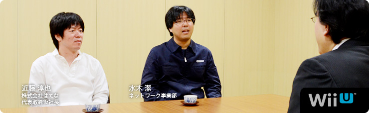 本文の一部を引用される場合は、必ず、本ページのURLを明記、または本ページへのリンクをしていただくようお願いいたします。 1. “共感ネットワーク” 2. ２階建てのサービス構造 3. ネットワーク方針の大転換 4. 「Wiiが街に」 岩田 多分、冒頭に載っている写真をご覧になった方が、 「なぜ、はてな（※1）の近藤さんがここに？」 と思われるかもしれません。 ※1 はてな＝株式会社はてな。「はてなブックマーク」「はてなダイアリー（はてなブログ）」をはじめとする、「はてな」の各サービスを開発し、インターネット上で運営を行う。設立は２００１年。本社は京都市。 近藤 ああ、そうですよね（笑）。 岩田 『Miiverse』をつくることになったときから、 ずっとごいっしょさせていただいています。 今回は「『Miiverse』プロデュース篇」ということで、 よろしくお願いします。 一同 よろしくお願いします。 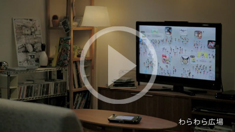 『Miiverse』紹介映像を見る 岩田 『Miiverse』というのは、 Miiを通じて世界中の人たちがつながる、 Wii Uにシステムレベルで統合された ゲームをもっと楽しむためのネットワークサービスです。 好きなゲームソフトの広場で感想を述べあったり、 手描きの絵や、コメントを書き込んだりしながら、 お客さん同士で交流を楽しむことができるサービスです。 また、「お互いのＩＤを打ち込む」という これまでのフレンドコード（※2）を打ち込むのと 同じような方法に加えて、『Miiverse』を使うことで、 いままでより簡単にフレンド関係を 成立させることもできるようになります。 ではまず、近藤さんから自己紹介をお願いします。 ※2 フレンドコード＝WiiやニンテンドーDS、ニンテンドー3DSなどで、インターネットに接続するときに、割り振られるIDのこと。お互いにフレンドコードを登録すると、離れた場所にいる友達とインターネットを通じて通信プレイが楽しめる。 近藤 株式会社はてなの近藤です。 『Miiverse』では、 初期のコンセプトメイキングなどを担当しました。 よろしくお願いします。 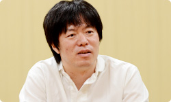 水木 任天堂ネットワーク事業部の水木です。 今回は『Miiverse』のプロデューサーというか、 ディレクターというか、 そんなようなことを担当しました。 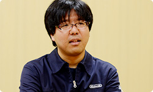 岩田 水木さんは『Miiverse』の 言い出しっぺでもありますね。 では水木さん、最初に 『Miiverse』はどうやってはじまったのか、 という話をしていただけますか？ 水木 はい。正直にお話しすると、 もともと僕の中で『Miiverse』の出発点は、 先日サービスが終了になった 『Wiiの間』（※3）にあると思っているんです。 サービスの構造はぜんぜん似ていないんですけど。 ※3 『Wiiの間』＝２００９年５月～２０１２年４月まで配信された、Wiiチャンネルのひとつ。「ショッピング」「ホームシアター」「いろんな間」の３つのサービスからなる“お茶の間コミュニケーションチャンネル”として、Wiiの間でしか買えないオリジナル商品に加え、グルメ・日用品・ファッション・インテリアなどのショッピングや、映画やアニメ・懐かしの番組などを期間レンタルで視聴できる有償映像サービスなどを提供していた。くわしくは、 社長が訊く『Wiiの間』を参照。 岩田 水木さんは当時、 『Wiiの間』のクライアント側の仕事を 担当していたんですよね。 水木 はい。それで、 「Wii Uのネットワークサービスはどうあるべきか？」 ということについて、 Wiiの間株式会社（※4）の別府（裕介）さん（※5）と 以前から相談していたんです。 相談とはいっても雑談のような感じなんですけど。 そのころに別府さんが、 「Miiを中心にした任天堂ならではのサービスができないか？」 という話をよくされていたんです。 ※4 Wiiの間株式会社＝『Wiiの間』を運営していた、任天堂と電通が共同で設立した会社。現在は、任天堂ネットワークサービス株式会社に社名を変更している。 ※5 別府裕介＝前 Wiiの間株式会社取締役社長。現 任天堂ネットワークサービス株式会社取締役社長。 岩田 まあ、その意味でいうと、 『Wiiの間』はまぎれもなく 任天堂ならではのサービスでしたよね。 水木 はい。やりたかったことは意外と似ています。 ただ『Wiiの間』は基本的に、 運営側がコンテンツをつくって お客さんに提供するものでしたが、 その仕組みでは高い頻度で更新ができなくて、 そこが強い反省点でもありました。 岩田 毎日、更新はしていたものの、 受け取るお客さんによって、 配信したものが面白いこともあれば、 ヒットしないこともあるので、 こちらが用意できる有限のコンテンツで すべての方に満足していただくことが とても難しかったですからね。 水木 はい。だから毎日、 お客さんに楽しんでいただけるものをつくるには、 全部を自分たちでつくるのではなく、 「より多くの方が参加できる“ＵＧＣ（※6）サービス” として実現させたほうがいいんじゃないか？」 と思ったんです。 ※6 ＵＧＣ＝User Generated Content（ユーザー生成コンテンツ）。利用者によって制作・生成されたさまざまなコンテンツの総称。 近藤 そうだったんですね。 『Wiiの間』との関係、いまはじめて知りました（笑）。 岩田 『Wiiの間』と『Miiverse』は単体で見たら、 Miiが登場すること以外は ほとんど共通点がないサービスですけど、 水木さんが『Wiiの間』の経験をしていなかったら、 また、毎日更新する大変さを目の当たりにしていなかったら、 この『Miiverse』は生まれていなかったかもしれませんね。 水木 あと、僕が『Miiverse』のことをプレゼンで提案したとき、 たしか「Miiを使った新しいネットワークサービス」 という表現をしたと思うんですけど、 岩田さんがプレゼンの直後に 「これは“共感ネットワーク”ですね」って言われたんです。 突然言われたので驚きました。 岩田 水木さんの話を聞いてね、 同じゲームを体験した人が、 「あー、そうそう、自分もそう思ってた」 という“共感”でつながってわかりあえると、 「両方が幸せになれるな」と思ったんです。 だから「どうしたら共感が伝わりあい、増幅しあえるか？」 ということを軸に据えて、 サービスを考えていけばいいから、 「これは“共感ネットワーク”なんだ」 という話をした記憶があります。 水木 そのとき『Miiverse』の核となっていたのは、 「プレイ履歴のある人同士がコミュニティ（※7）で交流できる」 というものでした。 ※7 コミュニティ＝共通の興味を持つ者同士が、さまざまな意見を交換したり、閲覧したりできるオンライン上の場所のこと。 岩田 『Miiverse』はゲーム機と統合したサービスですし、 遊んだソフトのプレイ履歴を確認しあえるようにすれば、 そのことを前提に、やりとりができますからね。 近藤 同じ体験をした人同士だからこそ、 交流しやすくなるんですね。 水木 その後、社内の開発プロデューサーや ディレクターだけでなく、 宣伝部署であったり、営業関係の方だったり、 さまざまな人と相談・・・というか、 雑談をくり返して（笑）、 仕様を詰めていった感じです。 岩田 水木さんはある一定期間、 社内を歩きまわって、 ひたすら雑談をくり返していましたよね。 水木 はい。だから「自分が考えた」というより、 いろんな人と話していくなかで、 「ぼんやりしていたものが少しずつ明確になっていった」 という感じです。 最初は「Miiわらわら」と呼んでいた 「わらわら広場」（※8）も、まさにそうなんですけど。 ※8 「わらわら広場」＝Wii Uを立ち上げたホームメニュー画面に、ゲームのアイコンと、そのゲームを遊んでいる人たちのMiiが出てきて、交流する仕組み。出てくるゲームのアイコンは、すべて自分が持っているものとは限らず、さまざまなMiiがわらわらと登場し、画面上には感想などが表示される。いわば、ゲームのホームメニュー画面とおすすめ機能を統合したかたち。 岩田 「Miiがいっぱい出てきて、わらわらする何か」 みたいな話は、わりと初期から話題になっていましたよね。 水木 そうですね。 雑談をする相手の中に、 「すれちがいMii広場」（※9）を担当した 河本（浩一）さん（※10）がいたんですけど、 「単なるウェブサービスのような画面ばかりでなくて、 何か特徴的な画面が欲しいよね」と河本さんに言われて、 「そうだよな・・・」と思って、 「じゃあとりあえずMiiがなんかわらわらしてたらよいかな？」 みたいに雑談したのがキッカケです。 その後、Wii Uの本体メニューをつくっているチームが 「Wii Uの起動画面にMiiをわらわらと出しましょう」 と言ってくれて、 いまのような「わらわら広場」というかたちで 仕上げてくれたんです。 ※9 「すれちがいMii広場」＝ニンテンドー3DSに内蔵されているソフトのひとつ。すれちがい通信ですれちがった人のMiiが集まってくる広場のことで、相手のプロフィールを見たり、『すれちがい伝説』などを楽しむことができる。 ※10 河本浩一＝企画開発本部環境制作部所属。ニンテンドー3DSの「すれちがいMii広場」や、付属ＡＲカードを使った「ＡＲゲームズ」などのディレクションを担当。過去、 社長が訊く『ものすごく脳を鍛える５分間の鬼トレーニング』開発スタッフ篇に登場。 岩田 じつは、Wii Uの本体メニューは、 『どうぶつの森』（※11）シリーズのディレクターを務めてきた 野上（恒）さん（※12）がまとめているんですよね。 ※11 『どうぶつの森』＝２００１年４月、NINTENDO64用ソフトとして発売された『どうぶつの森』が１作目。最新作は２０１２年１１月８日、ニンテンドー3DS用ソフトとして発売の『とびだせ どうぶつの森』。 ※12 野上恒＝情報開発本部制作部所属。『どうぶつの森』シリーズのディレクターを担当。過去、 社長が訊く『街へいこうよ どうぶつの森』に登場。 水木 Wii Uの総合プロデューサーの 江口（勝也）さん（※13）と、野上さんは、 『どうぶつの森』の経験もあって、 かなり早い段階で『Miiverse』の構想に 賛成してくれたおふたりでした。 江口さんが推進してくださったおかげで、 『New スーパーマリオブラザーズ U』（※14）や 『Nintendo Land』（※15）は、 積極的に『Miiverse』に対応してもらえました。 ※13 江口勝也＝情報開発本部制作部部長。『どうぶつの森』シリーズをはじめ、『Wii Sports』や『Wii Sports Resort』などのプロデューサーも担当。また、Wii Uの開発では、総合プロデューサーを担当し、『Nintendo Land』のプロデューサーも担当。過去、 Ｅ３ ２０１２特別篇 社長が訊く『Wii U』に登場。 ※14
Nintendo TVii 篇 Wii Street U powered by Google 篇 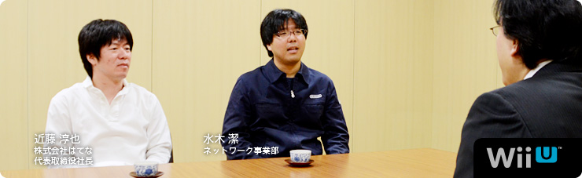 本文の一部を引用される場合は、必ず、本ページのURLを明記、または本ページへのリンクをしていただくようお願いいたします。 1. “共感ネットワーク” 2. ２階建てのサービス構造 3. ネットワーク方針の大転換 4. 「Wiiが街に」 岩田 多分、冒頭に載っている写真をご覧になった方が、 「なぜ、はてな（※1）の近藤さんがここに？」 と思われるかもしれません。 ※1 はてな＝株式会社はてな。「はてなブックマーク」「はてなダイアリー（はてなブログ）」をはじめとする、「はてな」の各サービスを開発し、インターネット上で運営を行う。設立は２００１年。本社は京都市。 近藤 ああ、そうですよね（笑）。 岩田 『Miiverse』をつくることになったときから、 ずっとごいっしょさせていただいています。 今回は「『Miiverse』プロデュース篇」ということで、 よろしくお願いします。 一同 よろしくお願いします。 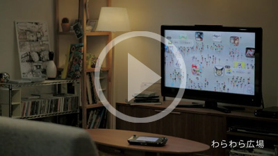 『Miiverse』紹介映像を見る 岩田 『Miiverse』というのは、 Miiを通じて世界中の人たちがつながる、 Wii Uにシステムレベルで統合された ゲームをもっと楽しむためのネットワークサービスです。 好きなゲームソフトの広場で感想を述べあったり、 手描きの絵や、コメントを書き込んだりしながら、 お客さん同士で交流を楽しむことができるサービスです。 また、「お互いのＩＤを打ち込む」という これまでのフレンドコード（※2）を打ち込むのと 同じような方法に加えて、『Miiverse』を使うことで、 いままでより簡単にフレンド関係を 成立させることもできるようになります。 ではまず、近藤さんから自己紹介をお願いします。 ※2 フレンドコード＝WiiやニンテンドーDS、ニンテンドー3DSなどで、インターネットに接続するときに、割り振られるIDのこと。お互いにフレンドコードを登録すると、離れた場所にいる友達とインターネットを通じて通信プレイが楽しめる。 近藤 株式会社はてなの近藤です。 『Miiverse』では、 初期のコンセプトメイキングなどを担当しました。 よろしくお願いします。 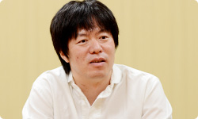 水木 任天堂ネットワーク事業部の水木です。 今回は『Miiverse』のプロデューサーというか、 ディレクターというか、 そんなようなことを担当しました。 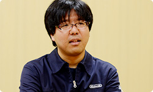 岩田 水木さんは『Miiverse』の 言い出しっぺでもありますね。 では水木さん、最初に 『Miiverse』はどうやってはじまったのか、 という話をしていただけますか？ 水木 はい。正直にお話しすると、 もともと僕の中で『Miiverse』の出発点は、 先日サービスが終了になった 『Wiiの間』（※3）にあると思っているんです。 サービスの構造はぜんぜん似ていないんですけど。 ※3 『Wiiの間』＝２００９年５月～２０１２年４月まで配信された、Wiiチャンネルのひとつ。「ショッピング」「ホームシアター」「いろんな間」の３つのサービスからなる“お茶の間コミュニケーションチャンネル”として、Wiiの間でしか買えないオリジナル商品に加え、グルメ・日用品・ファッション・インテリアなどのショッピングや、映画やアニメ・懐かしの番組などを期間レンタルで視聴できる有償映像サービスなどを提供していた。くわしくは、 社長が訊く『Wiiの間』を参照。 岩田 水木さんは当時、 『Wiiの間』のクライアント側の仕事を 担当していたんですよね。 水木 はい。それで、 「Wii Uのネットワークサービスはどうあるべきか？」 ということについて、 Wiiの間株式会社（※4）の別府（裕介）さん（※5）と 以前から相談していたんです。 相談とはいっても雑談のような感じなんですけど。 そのころに別府さんが、 「Miiを中心にした任天堂ならではのサービスができないか？」 という話をよくされていたんです。 ※4 Wiiの間株式会社＝『Wiiの間』を運営していた、任天堂と電通が共同で設立した会社。現在は、任天堂ネットワークサービス株式会社に社名を変更している。 ※5 別府裕介＝前 Wiiの間株式会社取締役社長。現 任天堂ネットワークサービス株式会社取締役社長。 岩田 まあ、その意味でいうと、 『Wiiの間』はまぎれもなく 任天堂ならではのサービスでしたよね。 水木 はい。やりたかったことは意外と似ています。 ただ『Wiiの間』は基本的に、 運営側がコンテンツをつくって お客さんに提供するものでしたが、 その仕組みでは高い頻度で更新ができなくて、 そこが強い反省点でもありました。 岩田 毎日、更新はしていたものの、 受け取るお客さんによって、 配信したものが面白いこともあれば、 ヒットしないこともあるので、 こちらが用意できる有限のコンテンツで すべての方に満足していただくことが とても難しかったですからね。 水木 はい。だから毎日、 お客さんに楽しんでいただけるものをつくるには、 全部を自分たちでつくるのではなく、 「より多くの方が参加できる“ＵＧＣ（※6）サービス” として実現させたほうがいいんじゃないか？」 と思ったんです。 ※6 ＵＧＣ＝User Generated Content（ユーザー生成コンテンツ）。利用者によって制作・生成されたさまざまなコンテンツの総称。 近藤 そうだったんですね。 『Wiiの間』との関係、いまはじめて知りました（笑）。 岩田 『Wiiの間』と『Miiverse』は単体で見たら、 Miiが登場すること以外は ほとんど共通点がないサービスですけど、 水木さんが『Wiiの間』の経験をしていなかったら、 また、毎日更新する大変さを目の当たりにしていなかったら、 この『Miiverse』は生まれていなかったかもしれませんね。 水木 あと、僕が『Miiverse』のことをプレゼンで提案したとき、 たしか「Miiを使った新しいネットワークサービス」 という表現をしたと思うんですけど、 岩田さんがプレゼンの直後に 「これは“共感ネットワーク”ですね」って言われたんです。 突然言われたので驚きました。 岩田 水木さんの話を聞いてね、 同じゲームを体験した人が、 「あー、そうそう、自分もそう思ってた」 という“共感”でつながってわかりあえると、 「両方が幸せになれるな」と思ったんです。 だから「どうしたら共感が伝わりあい、増幅しあえるか？」 ということを軸に据えて、 サービスを考えていけばいいから、 「これは“共感ネットワーク”なんだ」 という話をした記憶があります。 水木 そのとき『Miiverse』の核となっていたのは、 「プレイ履歴のある人同士がコミュニティ（※7）で交流できる」 というものでした。 ※7 コミュニティ＝共通の興味を持つ者同士が、さまざまな意見を交換したり、閲覧したりできるオンライン上の場所のこと。 岩田 『Miiverse』はゲーム機と統合したサービスですし、 遊んだソフトのプレイ履歴を確認しあえるようにすれば、 そのことを前提に、やりとりができますからね。 近藤 同じ体験をした人同士だからこそ、 交流しやすくなるんですね。 水木 その後、社内の開発プロデューサーや ディレクターだけでなく、 宣伝部署であったり、営業関係の方だったり、 さまざまな人と相談・・・というか、 雑談をくり返して（笑）、 仕様を詰めていった感じです。 岩田 水木さんはある一定期間、 社内を歩きまわって、 ひたすら雑談をくり返していましたよね。 水木 はい。だから「自分が考えた」というより、 いろんな人と話していくなかで、 「ぼんやりしていたものが少しずつ明確になっていった」 という感じです。 最初は「Miiわらわら」と呼んでいた 「わらわら広場」（※8）も、まさにそうなんですけど。 ※8 「わらわら広場」＝Wii Uを立ち上げたホームメニュー画面に、ゲームのアイコンと、そのゲームを遊んでいる人たちのMiiが出てきて、交流する仕組み。出てくるゲームのアイコンは、すべて自分が持っているものとは限らず、さまざまなMiiがわらわらと登場し、画面上には感想などが表示される。いわば、ゲームのホームメニュー画面とおすすめ機能を統合したかたち。 岩田 「Miiがいっぱい出てきて、わらわらする何か」 みたいな話は、わりと初期から話題になっていましたよね。 水木 そうですね。 雑談をする相手の中に、 「すれちがいMii広場」（※9）を担当した 河本（浩一）さん（※10）がいたんですけど、 「単なるウェブサービスのような画面ばかりでなくて、 何か特徴的な画面が欲しいよね」と河本さんに言われて、 「そうだよな・・・」と思って、 「じゃあとりあえずMiiがなんかわらわらしてたらよいかな？」 みたいに雑談したのがキッカケです。 その後、Wii Uの本体メニューをつくっているチームが 「Wii Uの起動画面にMiiをわらわらと出しましょう」 と言ってくれて、 いまのような「わらわら広場」というかたちで 仕上げてくれたんです。 ※9 「すれちがいMii広場」＝ニンテンドー3DSに内蔵されているソフトのひとつ。すれちがい通信ですれちがった人のMiiが集まってくる広場のことで、相手のプロフィールを見たり、『すれちがい伝説』などを楽しむことができる。 ※10 河本浩一＝企画開発本部環境制作部所属。ニンテンドー3DSの「すれちがいMii広場」や、付属ＡＲカードを使った「ＡＲゲームズ」などのディレクションを担当。過去、 社長が訊く『ものすごく脳を鍛える５分間の鬼トレーニング』開発スタッフ篇に登場。 岩田 じつは、Wii Uの本体メニューは、 『どうぶつの森』（※11）シリーズのディレクターを務めてきた 野上（恒）さん（※12）がまとめているんですよね。 ※11 『どうぶつの森』＝２００１年４月、NINTENDO64用ソフトとして発売された『どうぶつの森』が１作目。最新作は２０１２年１１月８日、ニンテンドー3DS用ソフトとして発売の『とびだせ どうぶつの森』。 ※12 野上恒＝情報開発本部制作部所属。『どうぶつの森』シリーズのディレクターを担当。過去、 社長が訊く『街へいこうよ どうぶつの森』に登場。 水木 Wii Uの総合プロデューサーの 江口（勝也）さん（※13）と、野上さんは、 『どうぶつの森』の経験もあって、 かなり早い段階で『Miiverse』の構想に 賛成してくれたおふたりでした。 江口さんが推進してくださったおかげで、 『New スーパーマリオブラザーズ U』（※14）や 『Nintendo Land』（※15）は、 積極的に『Miiverse』に対応してもらえました。 ※13 江口勝也＝情報開発本部制作部部長。『どうぶつの森』シリーズをはじめ、『Wii Sports』や『Wii Sports Resort』などのプロデューサーも担当。また、Wii Uの開発では、総合プロデューサーを担当し、『Nintendo Land』のプロデューサーも担当。過去、 Ｅ３ ２０１２特別篇 社長が訊く『Wii U』に登場。 ※14
Wii Street U powered by Google 篇 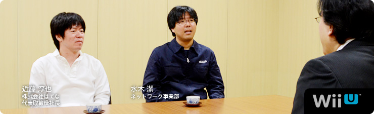 本文の一部を引用される場合は、必ず、本ページのURLを明記、または本ページへのリンクをしていただくようお願いいたします。 1. “共感ネットワーク” 2. ２階建てのサービス構造 3. ネットワーク方針の大転換 4. 「Wiiが街に」 岩田 多分、冒頭に載っている写真をご覧になった方が、 「なぜ、はてな（※1）の近藤さんがここに？」 と思われるかもしれません。 ※1 はてな＝株式会社はてな。「はてなブックマーク」「はてなダイアリー（はてなブログ）」をはじめとする、「はてな」の各サービスを開発し、インターネット上で運営を行う。設立は２００１年。本社は京都市。 近藤 ああ、そうですよね（笑）。 岩田 『Miiverse』をつくることになったときから、 ずっとごいっしょさせていただいています。 今回は「『Miiverse』プロデュース篇」ということで、 よろしくお願いします。 一同 よろしくお願いします。 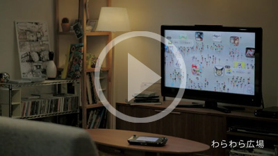 『Miiverse』紹介映像を見る 岩田 『Miiverse』というのは、 Miiを通じて世界中の人たちがつながる、 Wii Uにシステムレベルで統合された ゲームをもっと楽しむためのネットワークサービスです。 好きなゲームソフトの広場で感想を述べあったり、 手描きの絵や、コメントを書き込んだりしながら、 お客さん同士で交流を楽しむことができるサービスです。 また、「お互いのＩＤを打ち込む」という これまでのフレンドコード（※2）を打ち込むのと 同じような方法に加えて、『Miiverse』を使うことで、 いままでより簡単にフレンド関係を 成立させることもできるようになります。 ではまず、近藤さんから自己紹介をお願いします。 ※2 フレンドコード＝WiiやニンテンドーDS、ニンテンドー3DSなどで、インターネットに接続するときに、割り振られるIDのこと。お互いにフレンドコードを登録すると、離れた場所にいる友達とインターネットを通じて通信プレイが楽しめる。 近藤 株式会社はてなの近藤です。 『Miiverse』では、 初期のコンセプトメイキングなどを担当しました。 よろしくお願いします。 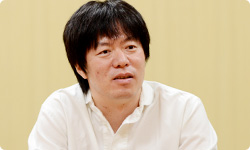 水木 任天堂ネットワーク事業部の水木です。 今回は『Miiverse』のプロデューサーというか、 ディレクターというか、 そんなようなことを担当しました。 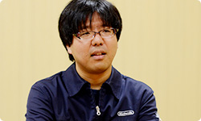 岩田 水木さんは『Miiverse』の 言い出しっぺでもありますね。 では水木さん、最初に 『Miiverse』はどうやってはじまったのか、 という話をしていただけますか？ 水木 はい。正直にお話しすると、 もともと僕の中で『Miiverse』の出発点は、 先日サービスが終了になった 『Wiiの間』（※3）にあると思っているんです。 サービスの構造はぜんぜん似ていないんですけど。 ※3 『Wiiの間』＝２００９年５月～２０１２年４月まで配信された、Wiiチャンネルのひとつ。「ショッピング」「ホームシアター」「いろんな間」の３つのサービスからなる“お茶の間コミュニケーションチャンネル”として、Wiiの間でしか買えないオリジナル商品に加え、グルメ・日用品・ファッション・インテリアなどのショッピングや、映画やアニメ・懐かしの番組などを期間レンタルで視聴できる有償映像サービスなどを提供していた。くわしくは、 社長が訊く『Wiiの間』を参照。 岩田 水木さんは当時、 『Wiiの間』のクライアント側の仕事を 担当していたんですよね。 水木 はい。それで、 「Wii Uのネットワークサービスはどうあるべきか？」 ということについて、 Wiiの間株式会社（※4）の別府（裕介）さん（※5）と 以前から相談していたんです。 相談とはいっても雑談のような感じなんですけど。 そのころに別府さんが、 「Miiを中心にした任天堂ならではのサービスができないか？」 という話をよくされていたんです。 ※4 Wiiの間株式会社＝『Wiiの間』を運営していた、任天堂と電通が共同で設立した会社。現在は、任天堂ネットワークサービス株式会社に社名を変更している。 ※5 別府裕介＝前 Wiiの間株式会社取締役社長。現 任天堂ネットワークサービス株式会社取締役社長。 岩田 まあ、その意味でいうと、 『Wiiの間』はまぎれもなく 任天堂ならではのサービスでしたよね。 水木 はい。やりたかったことは意外と似ています。 ただ『Wiiの間』は基本的に、 運営側がコンテンツをつくって お客さんに提供するものでしたが、 その仕組みでは高い頻度で更新ができなくて、 そこが強い反省点でもありました。 岩田 毎日、更新はしていたものの、 受け取るお客さんによって、 配信したものが面白いこともあれば、 ヒットしないこともあるので、 こちらが用意できる有限のコンテンツで すべての方に満足していただくことが とても難しかったですからね。 水木 はい。だから毎日、 お客さんに楽しんでいただけるものをつくるには、 全部を自分たちでつくるのではなく、 「より多くの方が参加できる“ＵＧＣ（※6）サービス” として実現させたほうがいいんじゃないか？」 と思ったんです。 ※6 ＵＧＣ＝User Generated Content（ユーザー生成コンテンツ）。利用者によって制作・生成されたさまざまなコンテンツの総称。 近藤 そうだったんですね。 『Wiiの間』との関係、いまはじめて知りました（笑）。 岩田 『Wiiの間』と『Miiverse』は単体で見たら、 Miiが登場すること以外は ほとんど共通点がないサービスですけど、 水木さんが『Wiiの間』の経験をしていなかったら、 また、毎日更新する大変さを目の当たりにしていなかったら、 この『Miiverse』は生まれていなかったかもしれませんね。 水木 あと、僕が『Miiverse』のことをプレゼンで提案したとき、 たしか「Miiを使った新しいネットワークサービス」 という表現をしたと思うんですけど、 岩田さんがプレゼンの直後に 「これは“共感ネットワーク”ですね」って言われたんです。 突然言われたので驚きました。 岩田 水木さんの話を聞いてね、 同じゲームを体験した人が、 「あー、そうそう、自分もそう思ってた」 という“共感”でつながってわかりあえると、 「両方が幸せになれるな」と思ったんです。 だから「どうしたら共感が伝わりあい、増幅しあえるか？」 ということを軸に据えて、 サービスを考えていけばいいから、 「これは“共感ネットワーク”なんだ」 という話をした記憶があります。 水木 そのとき『Miiverse』の核となっていたのは、 「プレイ履歴のある人同士がコミュニティ（※7）で交流できる」 というものでした。 ※7 コミュニティ＝共通の興味を持つ者同士が、さまざまな意見を交換したり、閲覧したりできるオンライン上の場所のこと。 岩田 『Miiverse』はゲーム機と統合したサービスですし、 遊んだソフトのプレイ履歴を確認しあえるようにすれば、 そのことを前提に、やりとりができますからね。 近藤 同じ体験をした人同士だからこそ、 交流しやすくなるんですね。 水木 その後、社内の開発プロデューサーや ディレクターだけでなく、 宣伝部署であったり、営業関係の方だったり、 さまざまな人と相談・・・というか、 雑談をくり返して（笑）、 仕様を詰めていった感じです。 岩田 水木さんはある一定期間、 社内を歩きまわって、 ひたすら雑談をくり返していましたよね。 水木 はい。だから「自分が考えた」というより、 いろんな人と話していくなかで、 「ぼんやりしていたものが少しずつ明確になっていった」 という感じです。 最初は「Miiわらわら」と呼んでいた 「わらわら広場」（※8）も、まさにそうなんですけど。 ※8 「わらわら広場」＝Wii Uを立ち上げたホームメニュー画面に、ゲームのアイコンと、そのゲームを遊んでいる人たちのMiiが出てきて、交流する仕組み。出てくるゲームのアイコンは、すべて自分が持っているものとは限らず、さまざまなMiiがわらわらと登場し、画面上には感想などが表示される。いわば、ゲームのホームメニュー画面とおすすめ機能を統合したかたち。 岩田 「Miiがいっぱい出てきて、わらわらする何か」 みたいな話は、わりと初期から話題になっていましたよね。 水木 そうですね。 雑談をする相手の中に、 「すれちがいMii広場」（※9）を担当した 河本（浩一）さん（※10）がいたんですけど、 「単なるウェブサービスのような画面ばかりでなくて、 何か特徴的な画面が欲しいよね」と河本さんに言われて、 「そうだよな・・・」と思って、 「じゃあとりあえずMiiがなんかわらわらしてたらよいかな？」 みたいに雑談したのがキッカケです。 その後、Wii Uの本体メニューをつくっているチームが 「Wii Uの起動画面にMiiをわらわらと出しましょう」 と言ってくれて、 いまのような「わらわら広場」というかたちで 仕上げてくれたんです。 ※9 「すれちがいMii広場」＝ニンテンドー3DSに内蔵されているソフトのひとつ。すれちがい通信ですれちがった人のMiiが集まってくる広場のことで、相手のプロフィールを見たり、『すれちがい伝説』などを楽しむことができる。 ※10 河本浩一＝企画開発本部環境制作部所属。ニンテンドー3DSの「すれちがいMii広場」や、付属ＡＲカードを使った「ＡＲゲームズ」などのディレクションを担当。過去、 社長が訊く『ものすごく脳を鍛える５分間の鬼トレーニング』開発スタッフ篇に登場。 岩田 じつは、Wii Uの本体メニューは、 『どうぶつの森』（※11）シリーズのディレクターを務めてきた 野上（恒）さん（※12）がまとめているんですよね。 ※11 『どうぶつの森』＝２００１年４月、NINTENDO64用ソフトとして発売された『どうぶつの森』が１作目。最新作は２０１２年１１月８日、ニンテンドー3DS用ソフトとして発売の『とびだせ どうぶつの森』。 ※12 野上恒＝情報開発本部制作部所属。『どうぶつの森』シリーズのディレクターを担当。過去、 社長が訊く『街へいこうよ どうぶつの森』に登場。 水木 Wii Uの総合プロデューサーの 江口（勝也）さん（※13）と、野上さんは、 『どうぶつの森』の経験もあって、 かなり早い段階で『Miiverse』の構想に 賛成してくれたおふたりでした。 江口さんが推進してくださったおかげで、 『New スーパーマリオブラザーズ U』（※14）や 『Nintendo Land』（※15）は、 積極的に『Miiverse』に対応してもらえました。 ※13 江口勝也＝情報開発本部制作部部長。『どうぶつの森』シリーズをはじめ、『Wii Sports』や『Wii Sports Resort』などのプロデューサーも担当。また、Wii Uの開発では、総合プロデューサーを担当し、『Nintendo Land』のプロデューサーも担当。過去、 Ｅ３ ２０１２特別篇 社長が訊く『Wii U』に登場。 ※14
本文の一部を引用される場合は、必ず、本ページのURLを明記、または本ページへのリンクをしていただくようお願いいたします。
1. “共感ネットワーク”
2. ２階建てのサービス構造
3. ネットワーク方針の大転換
4. 「Wiiが街に」